Volcano Remake
Один вулканический замковый стиль: светлый камень, лиловые скалы с зелёными верхами, красные крыши, яркие лавовые потоки и дым. Исходная дорога, игровые точки и линии сохранены.
Изменённый Blender-проект · Геометрия и бюджет · Проверка ресурсов
Статус визуала: технические проверки и игровые кадры собраны, но близкое совпадение с референсом ещё не достигнуто: крупные стены замка и форма атмосферных объёмов требуют дальнейшей работы. Согласование этой версии пользователем не записано.
Требование к весу — уточнение пользователя
Предел роста на 20% относится к весу модели вместе с используемыми текстурами. Число полигонов не ограничено этим процентом и приводится только как справочная метрика. Для итоговой карты действует более строгое требование: вес должен уменьшиться. В сравнении учитываются папка карты и новые общие игровые ресурсы; координатные размещения уже включены в её scene.xml. Размер авторского .blend и каталога исходников не является весом игровых ресурсов.
Исторические проверки числа полигонов в приложенных JSON отражают прежнюю интерпретацию и не являются подтверждением требования к весу модели с текстурами. Такой вывод требует отдельного замера обоих файлов; уменьшение всей карты само по себе его не доказывает.
Актуальность отчёта
Основные кадры предыдущей версии сняты до общего исправления HUD. В разделах отдельных кандидатов V2, V3, V4E, V5 Alpha и V7B добавлены новые игровые кадры с текущими полупрозрачными панелями. Версия каждой проверки указана в подписи; черновик не заменяет итоговую поставку.
Последняя проверенная распакованная сборка и установленное приложение: 294 007 475 байт (294,01 МБ), Debug iOS Simulator. Размеры приложения в таблицах ниже относятся к сборкам соответствующего этапа; размер карты и добавленных общих ресурсов учитывается отдельно. Это не размер IPA или скачивания.
Текущий рабочий вариант V36: каменная фактура сохранена
Камень оставлен с исходной текстурой 39 938 байт, SHA-256 6c765884a7846501355a429f3548d2df78698798a97a0318aefe358d0bdafdfd. Полотно, игровые точки и линии, сценарий, quads/graph и точные коллизии сохранены. Координаты, индексы, нормали и UV основного меша совпадают с V35. Изменены только цвета четырёх старых конических крыш и имя текстуры грязевых площадок; физические свойства дороги сохранены.
104 старых куста и 32 холма размещены на реальных поверхностях 82 поддержанных камнем уступов. Кусты перестали быть сплющенными дисками; масштаб и координаты этих декоративных экземпляров изменены намеренно. Сами общие модели, их локальные размеры, центр, оси и текстуры не менялись. Независимо проверены полные ограничивающие сферы относительно 2 032 дорожных треугольников: минимальный запас 2.645 м. У новых координат нет отдельной копии геометрии или изображения.
Для девяти грязевых объектов и старых площадок переиспользована существующая лавовая картинка: новых пикселей нет. У скопированного общего объекта грязевых пузырей сохранён весь бинарный скелетный/анимационный payload, размеры и исходные размещения. Его модели и используемые текстуры: 35,473 → 35,960 байт (+1.37%, меньше +20%). У десяти составных башен новая крыша использует уже имеющуюся кирпичную фактуру и красный цвет; тело, положение и размеры не менялись. Полный объект башни с телом, крышей и используемой текстурой: 10,067 → 10,023 байт. Сохранились габариты самой крыши; небольшой шест упростился с восьми до четырёх сторон, основная крыша и флаг сохранены. Подсчёт не выдаёт отдельно взятую крышу без её используемой текстуры за полный объект.
Дым наклонён вокруг прежнего нижнего якоря; исходный локальный меш не менялся. Небо использует шесть изображений из пула первой карты, солнце и туман настроены теплее. Все новые имена текстур посчитаны как реальные дополнительные файлы игры, даже при переиспользовании пикселей. Удалены только семь ставших ненужными файлов из копии рабочего варианта; прежние исходники и архив V35 сохранены.
| Состав веса | Байты |
|---|---|
| Все файлы рабочего варианта карты | 5,941,119 |
| Все файлы двух новых общих библиотек | 18,365 |
| Новые общие имена изображений | 35,560 |
| Сохранённые ранее принятые общие модели и изображения | 304,710 |
| Итого V36 | 6,299,754 |
| Прежний интегрированный V1 | 7,693,535 |
Экономия относительно V1 — 1,393,781 байт (18.12%), относительно V35 — 372,737. Размер приложения после новой сборки здесь не измерялся.
В Blender сохранены все 723 прежних меш-объекта; изменены 137 матриц декоративных объектов, материалы лавы и крыш и цвета четырёх конусов. Остальные 689 наборов геометрии, UV, нормалей, цветов и материалов совпали с V35; остальные 586 матрицы совпали. Каменные пиксели проверены и внутри .blend. Каноническая библиотека сохранена и открыта повторно: прежние геометрия, изображения и свечение окон зимних домов проверены. Ведомость: 46 прототипов, 99 материалов и 430 общих размещённых частей; пул содержит 4174 уникальных ID с проверенными физическими путями, хешами и зависимостями.
Полный круг Time Trial естественно завершился результатом #1. Просмотрены кадры 40, 80, 140 и 190 секунд и общий обзор движка. Скриншоты сохранены без ретуши, включая чёрную аппаратную плашку симулятора на кадре 140 секунд. Временная карта и скопированные ресурсы после теста убраны; прежние факелы, деревья и холмы в установленной игре не изменены. Опасное прохождение исходной рампы ранее наблюдалось в V1; все возможные регрессии не исключены.


Это рабочая доработка, соответствие всему референсу ещё не принято: остаются тонкие травяные края, плоский дальний фон, старые слишком яркие зелёные и лавовые поверхности и композиция неба. Четыре старые крыши пока окрашены без фактуры. Основная карта, пользовательский итоговый .blend и превью всё ещё V1. Новая сборка, производительность, обратный режим и вся кампания не проверялись.
Blender V36 · Полотно и вес · Blender · Игровой круг · Пул
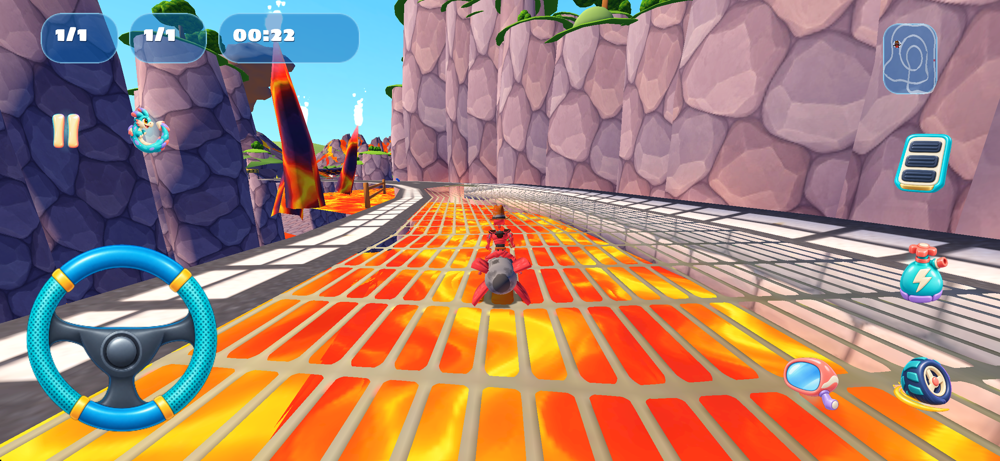
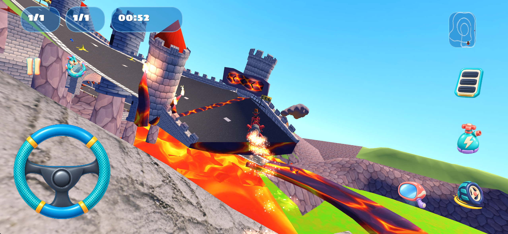
Предыдущая доработка — V35: каменные колонны и нижний ландшафт
По замечанию «С текстурой камня было лучше» каменная фактура сохранена: 39 938 байт, SHA-256 6c765884a7846501355a429f3548d2df78698798a97a0318aefe358d0bdafdfd. Новых файлов моделей или текстур для дополнительных экземпляров не потребовалось. Нижнее поле лавы и 15 опор башен используют уже существующие модели по координатам.
Из видимой старой массы убраны два компонента, 1 508 треугольников; их точная геометрия сохранена в отдельной невидимой коллизии. Независимо проверено равенство исходных 2 210 треугольников объединению оставшихся 702 видимых и 1 508 невидимых. Остальные буферы основного меша, материал, UV и его общие габариты совпали с V32. Полотно, игровые точки и линии, quads/graph, сценарий и track.xml сохранены. Коллизии не оценивались только по наличию старого V26 файла: тот содержит 64 треугольника центральной опоры и не покрывает удалённую большую массу.
Первая попытка V33 оставила большие пустоты под дорогой и отклонена. В V34 лава размещена на высоте −60 м, на 16.137 м ниже самого низкого защищённого дорожного фрагмента. Основания 82 скал удлинены вниз с сохранением прежней верхней точки, XZ и направления. Все 16 исходных башен сохранены; под 15 добавлена опора. Под оставшейся башней опора пересекала бы дорогу, поэтому этот экземпляр не добавлен.
Игровой кадр V34 выявил щели на старых небольших скалах. Этот вариант не принят как визуально готовый. V35 переводит 58 старых групп на уже проверенную пару камня и травы V32: общий контур из 16 точек, перекрытие 0.08 м. Для этих 116 частей независимо проверены 25 056 треугольников относительно 2 032 дорожных; минимальное расстояние — 1.215 м. 24 крупные группы сохранены. Локальные размеры, центр и оси источников не менялись; масштабы и высоты добавленных декоративных экземпляров изменены намеренно. Две общие модели с используемой каменной текстурой по-прежнему весят 46 337 байт; роста веса этого набора нет.

Итог рабочего варианта с новыми общими ресурсами и сохранёнными принятыми ранее вариантами — 6,672,491 байт против 7,693,535 у интегрированного V1: экономия 1,021,044 байт (13.27%). В подсчёт включены новый файл коллизии, все файлы карты и новые общие модели/текстуры. Дополнительный файл лавового поля не создаётся на каждое размещение. Размер новой сборки приложения не измерялся.
Blender проверен отдельно: 584 остальные сетки точно совпали с V32 по геометрии, UV, нормалям, цветам и материалам; 561 остальные матрицы также совпали. Наборы этих объектов различаются. Проверены 702 видимые и 1 508 невидимые треугольников стены, а также 1 686 треугольников трёх частей лавового поля. Его части в исходном Blender идут в обратном порядке относительно игровых буферов; соответствие исправлено и проверено, геометрия не менялась. Ведомость содержит 43 прототипа, 94 определения материалов и 430 общих размещённых частей. В канонический пул добавлены три уже существовавшие части лавы; прежние материалы, изображения и свечение окон зимних домов проверены. Пул: 4156 уникальных ID, ведомость карты: 343 ресурсов; реальные пути, хеши и зависимости проверены.
Полный круг Time Trial естественно завершился результатом #1. Просмотрены игровые кадры 40, 80, 140 и 190 секунд, а также отдельный обзор движка. Скриншоты сохранены без ретуши. Временные карты и ресурсы убраны из приложения; исходные деревья, холмы и факелы не менялись. Опасное прохождение исходной рампы ранее наблюдалось и в V1; все возможные регрессии не исключены.


Карта ещё не готова по референсу: тонкие травяные кромки, старая подвешенная листва и грязевые площадки, плоский дальний фон, крыши и атмосфера требуют доработки. Основная карта, пользовательский итоговый .blend и превью пока V1. Новая сборка, производительность, обратный режим и вся кампания не проверялись.
Blender V35 · Полотно и вес · Blender · Игровой круг · Пул
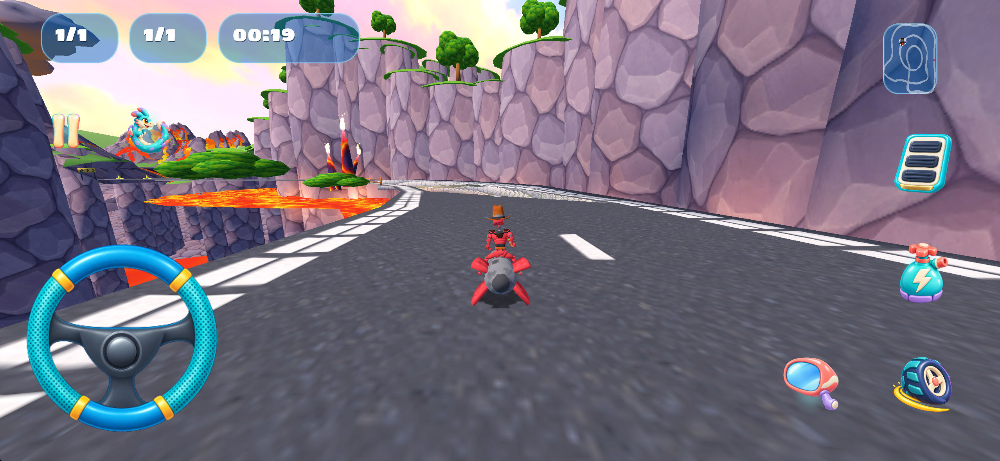
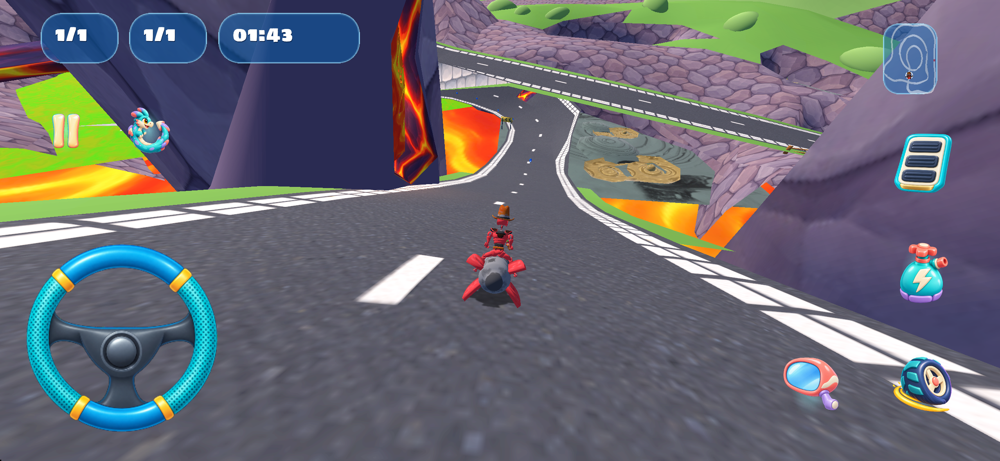
Предыдущая доработка — V32: стык зелёной вершины и камня
Каменная текстура сохранена по замечанию пользователя: 39 938 байт, SHA-256 6c765884a7846501355a429f3548d2df78698798a97a0318aefe358d0bdafdfd. На 24 крупных группах V30 зелёные вершины стали толще: 3.073 м вместо 0.768 м. Деревья подняты на действительные треугольники поверхности.
Одного увеличения масштаба оказалось недостаточно: V31 показал зазор и висящие зелёные дуги. Этот вариант отклонён по визуалу, в основную карту и в принятый пул не перенесён. V32 использует две отдельные копии общих моделей: верхняя граница камня и открытая граница травы согласованы по контуру и высоте. В мировых координатах есть 0.08 м перекрытия, устраняющего щель. Исходные общие модели сохранены.

У копий изменены только вершины стыка и связанные нормали. Локальные габариты, центр, оси, UV, цвета, индексы и число треугольников сохранены. Текстура камня и материал травы переиспользованы без изменений. Общий вес двух моделей с используемой текстурой — 46 337 байт до и после; верхний предел +20% соблюдён. Для 24 каменных частей сохранены прежние матрицы, для 24 шапок и 24 деревьев намеренно изменены масштаб или высота экземпляра.
Все исходные файлы карты кроме описания размещений совпали с V30. В scene.xml изменены только ранее добавленные декоративные группы; исходные дорога, коллизии, эффекты, игровые точки и линии сохранены. Независимо проверены 24,480 треугольников 72 частей относительно 2 032 защищённых треугольников дороги; минимальное расстояние — 3.264 м. Контакт всех 24 деревьев с поверхностью проверен отдельно.
В Blender 48 экземпляров используют две новые общие сетки; остальные 651 прежний меш точно совпали с V30 по геометрии, UV, нормалям, цветам и материалам. Остальные 651 матрица также совпали; наборы этих объектов различаются. Два новых прототипа сопоставлены с 432 игровыми треугольниками. Ведомость содержит 40 зарегистрированных прототипов, 94 определения материалов и 412 общих размещённых частей. Каноническая библиотека дополнена двумя копиями, прежние материалы и изображения сохранены. В общем индексе 4152 уникальных ID; в ведомости карты 339 ресурсов. Реальные файлы, хеши и зависимости проверены.
Общий вес рабочего варианта с новыми и принятыми ранее общими игровыми ресурсами — 6,675,527 байт, меньше интегрированного V1 (7,693,535) на 1,018,008 байт (13.23%). Две общие библиотеки добавили 6,919 байт; модели не дублируются для каждого размещения. Размер свежей сборки приложения не измерялся.
Полный круг Time Trial завершился естественным результатом #1. Просмотрены кадры 40, 80, 140 и 190 секунд и обзор из игрового движка, без ретуши. Временные карты и скопированные ресурсы убраны из установленного приложения; донорские деревья, холмы и факелы не менялись. Опасное прохождение исходной рампы наблюдалось ранее и в V1; причина не исправлена, все возможные регрессии не исключены.


Это локальная доработка, не готовность всей карты. Крупная исходная масса, замок, крыши и атмосфера ещё отличаются от референса. Основная карта, итоговый пользовательский .blend и превью пока V1. Новая сборка, производительность, обратный режим и вся кампания не проверялись.
Blender V32 · Дорога и вес · Blender · Игровой круг · Пул · Отклонённый V31
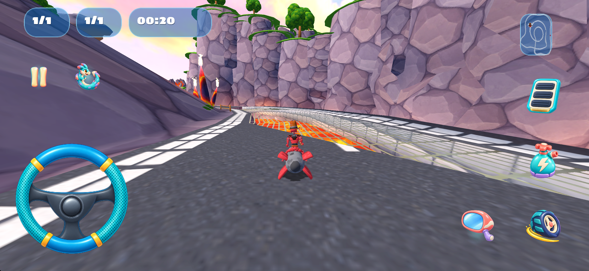
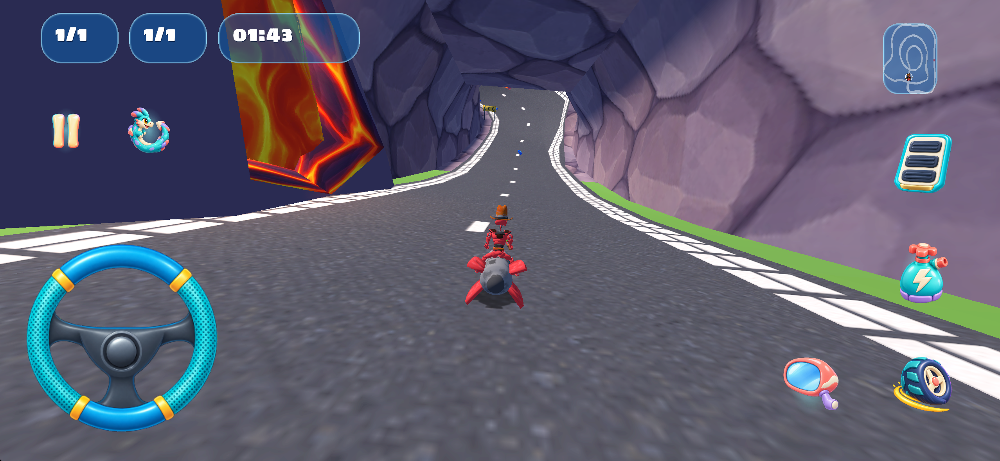
Предыдущая доработка — V30: крупные каменные группы и деревья из пула
На десятую карту добавлены 24 крупные группы: каменное основание, зелёная шапка и объёмное лиственное дерево. Они выбирались по высоким декоративным граням существующих склонов вокруг маршрута. Большие каменные тела высотой от основания −40 м до выбранного верха заполняют промежутки между прежними маленькими выступами. Это добавленные декорации; исходные стены остались за ними. Замена всей видимой исходной массы в этой версии не выполнена.
Все три модели взяты из физического общего пула без изменения сеток, UV, нормалей, цветов, локальных габаритов, начала координат или осей. Камень — ранее адаптированный общий V29, зелёная шапка — компонент V27, дерево — существующая объёмная модель DP Motorsports. Для 72 частей записаны координаты, направление и масштаб; отдельная модель на каждое размещение не создавалась. Деревья поставлены на фактические треугольники зелёных шапок, а не на центры объектов; контакт всех 24 корней с поверхностью проверен независимо.
Текстура камня по замечанию пользователя сохранена: 39 938 байт, SHA-256 6c765884a7846501355a429f3548d2df78698798a97a0318aefe358d0bdafdfd. Дерево, палитра и текстура листьев уже были в приложении; файлы установленной библиотеки, исходника и физического пакета совпали. Новых изображений, материалов или игровых моделей нет.
| Общая модель с используемыми текстурами | До, байт | После, байт |
|---|---|---|
| Каменное основание | 42 471 | 42 471 |
| Зелёная шапка с цветами вершин | 3 866 | 3 866 |
| Лиственное дерево с палитрой и листьями | 126,155 | 126,155 |
Вес каждой модели с её текстурами не изменился; верхний предел +20% соблюдён. Новые координаты добавили 14,342 байт. Общий вес рабочего варианта карты со всеми ранее добавленными общими игровыми ресурсами — 6,668,587 байт: меньше интегрированного V1 (7,693,535) на 1,024,948 байт, или 13.32%. Добавленный игровой ресурсный payload — 0 байт; увеличение веса здесь относится только к описанию размещений. Размер свежей сборки приложения не измерялся.
Все исходные файлы карты кроме scene.xml совпадают с V29. Все прежние узлы scene.xml, включая физику, эффекты и игровые структуры, сохранены; добавлены только новые библиотечные экземпляры. Независимо проверены 24,480 новых видимых треугольников относительно 2 032 защищённых треугольников проезда. Минимальный запас до дороги — 3.299 м. Итоговый пользовательский проект и установленная основная карта по-прежнему соответствуют V1.
В Blender добавлены 72 части и один прямо переиспользованный прототип дерева. Все 626 прежних мешей и их матрицы совпали с V29. Геометрия, UV, нормали, все цветовые атрибуты и материалы дерева точно совпали с его донорским нативным файлом; позиции 588 экспортированных треугольников и локальный габарит также сопоставлены с игровой моделью. В ведомости 38 прототипов и 94 определения материалов, из них два добавленных в проект материала прямо переиспользованы с деревом. Всего 412 общих размещённых частей.
Каноническая библиотека не менялась: все используемые модели и материалы уже есть в ней. Ведомость теперь содержит 335 ресурсов с историческими источниками; их реальные файлы, хеши и зависимости проверены. В общем индексе 4148 уникальных ID, новых ресурсов не добавлено. Существующим моделям отмечено применение на карте 10.
Полный круг Time Trial завершился естественным результатом #1, без принудительной победы. Проверены кадры 40, 80 — исходная наклонная рампа с ускорителем, 140 и 190 секунд. Дополнительный кадр оказался уже экраном результата; он не выдаётся за второй дорожный ракурс. Опасное прохождение рампы наблюдалось ранее и в V1; причина не исправлена и все регрессии не исключены. Временная карта и скопированные ресурсы убраны из установленного приложения; существующие деревья, факелы, эффекты и холмы не менялись. Предупреждения материалов совпали с предыдущей проверкой.


Два дорожных кадра ниже и обзор из игрового движка сохранены без ретуши. Виды разных запусков не заявляются как одинаковые покадровые траектории. Крупные выступы и деревья видны вдоль дороги, но сходство с референсом ещё неполное: исходная большая центральная масса, дальние стены, замок, зелёные шапки и атмосфера требуют дальнейшей работы.

Это проверенный промежуточный вариант. Основная карта, итоговый пользовательский .blend и превью пока V1. Новая сборка, производительность, обратный режим и вся кампания не проверялись.
Blender V30 · Размещения, дорога и вес · Blender · Физический пул и дерево · Игровой круг · Ведомость
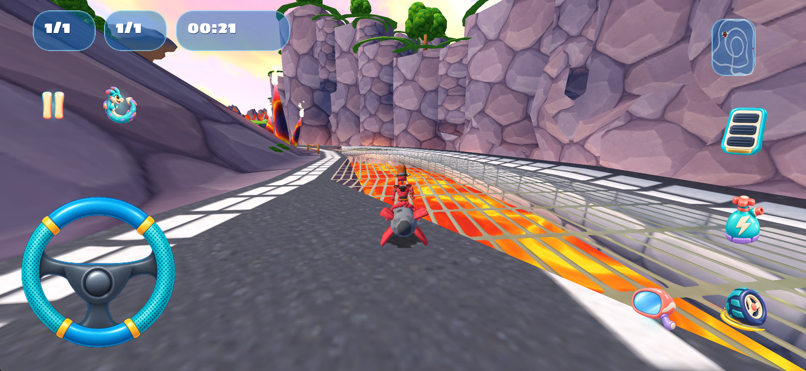
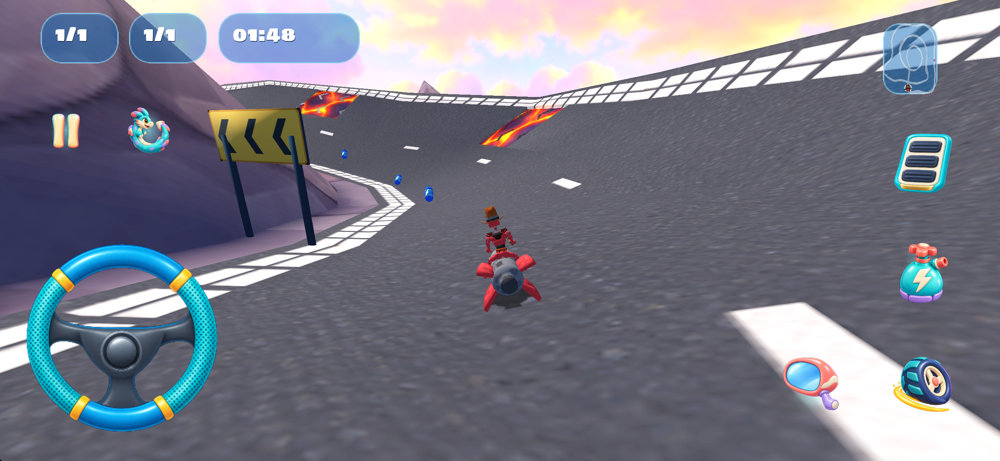
Предыдущая доработка — V29: каменная текстура и более широкие основания
По замечанию «С текстурой камня было лучше» сохранена прежняя каменная фактура: 39 938 байт, SHA-256 6c765884a7846501355a429f3548d2df78698798a97a0318aefe358d0bdafdfd. Новые пиксели и материалы не создавались.
У общей модели каменного основания расширены 43 нижние вершины. Сетка осталась прежней: 95 вершин и 152 треугольника. Верхняя часть с её нормалями, индексированная топология, UV, цвета, локальный активный габарит, начало координат и оси сохранены; нормали нижней части пересчитаны. Это отдельная копия объекта из пула, исходная модель не менялась. Все 58 каменных экземпляров ссылаются на один новый общий экспорт. Их позиции, масштаб и направления совпадают с V28; зелёные шапки и прочий декор не изменены.
Независимая проверка подтвердила отсутствие вырожденных или перевёрнутых треугольников. У модели сохранены 220 общих рёбер и 16 исходных открытых рёбер у верхней границы, которую закрывает отдельная зелёная шапка. Все каменные экземпляры проверены относительно 2 032 защищённых треугольников дороги; минимальное расстояние — 0.853 м. Полотно, физические модели, контрольные файлы и остальные узлы карты совпадают с V28.
| Вес | До | После |
|---|---|---|
| Общая каменная модель с используемой текстурой, байт | 42,471 | 42,471 |
| Карта со всеми новыми общими ресурсами, включая сохранённые ранние варианты, байт | 7,693,535 (интегрированный V1) | 6,654,245 |
Модель с текстурой не выросла; верхний предел +20% по весу соблюдён. Новый вариант библиотеки с XML добавил 2,798 байт относительно V28. Карта с новыми общими ресурсами легче V1 на 1,039,290 байт (13.51%). Размер новой сборки приложения не измерялся.
В Blender 58 экземпляров используют один новый меш. Все прежние 625 матриц размещения и остальные 567 мешей совпали с V28 по геометрии, UV, нормалям, цветам и материалам. Добавлен один скрытый прототип; прежний донорский прототип сохранён. Всего в ведомости 37 прототипов, 92 определения материалов и 340 общих размещённых частей. Новый прототип проверен в канонической библиотеке; все 330 ресурсов ведомости разрешаются в реальные файлы с совпадающими хешами и зависимостями. Новых текстур или материалов нет.
Полный круг Time Trial завершился естественным результатом #1 без принудительной победы. Проверены четыре игровых кадра: 40, 80 — исходная наклонная рампа с ускорителем, 140 и 190 секунд. Опасное прохождение рампы ранее наблюдалось и в V1; эта правка не исправляет его и не исключает все регрессии. Временные игровые ресурсы убраны из установленного приложения; доноры и существующие эффекты сохранены, предупреждения материалов совпали с предыдущими.


Игровые кадры ниже и диагностический вид сохранены без ретуши. На диагностике слева остаётся чёрная системная/UI-плашка. Расширение улучшило нижний силуэт; посадка каждого выступа на поверхность ещё не подтверждена. Общая композиция по-прежнему отличается от референса: центральная масса, дальние стены, замок, растительность и атмосфера требуют работы.

Это проверенный промежуточный вариант. Основная карта, итоговый пользовательский .blend и превью пока V1; новая версия туда не перенесена. Новая сборка, производительность, обратный режим и вся кампания не проверялись.
Blender V29 · Сохранность и вес · Blender · Игровой круг · Пул
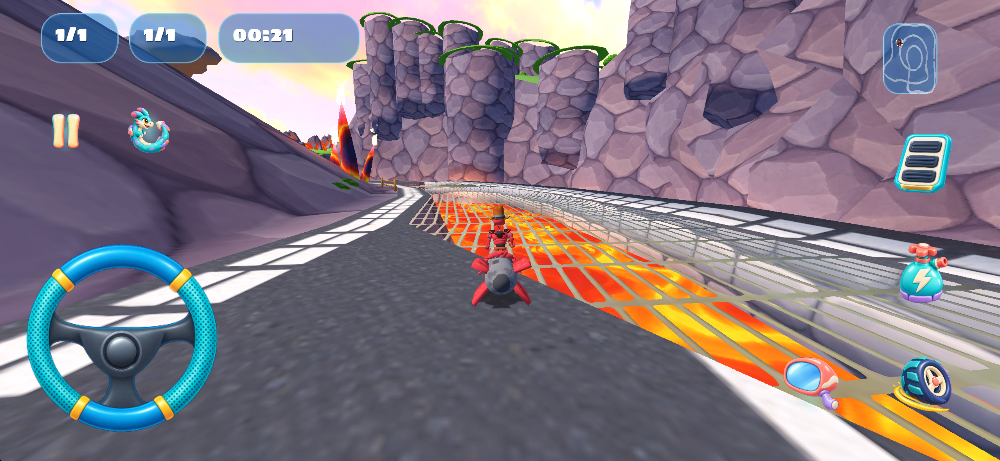
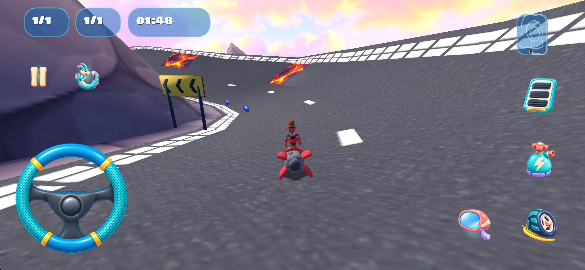
Предыдущая доработка — V28: высокие каменные группы по координатам
Каменная текстура размером 39 938 байт сохранена по замечанию пользователя. Её пиксели не менялись: SHA-256 6c765884a7846501355a429f3548d2df78698798a97a0318aefe358d0bdafdfd. Новых изображений или материалов нет.
Центральная каменная опора в V26 сглажена: 64 исходные грани декоративного камня заменены 1 024 гранями. Её активный габарит, начало координат, оси и размещение прежние; сдвиг вершин — до 3,14 м. Точная исходная физическая сетка камня сохранена отдельной невидимой моделью. Остальные поверхности, включая 532 грани арки, сохранились. UV исходных вершин оставлены, для новых вершин интерполированы. Независимая проверка перемещённых граней дала нижнюю границу расстояния до дороги 5,000 м.
58 ранее добавленных общих уступов разделены на две части: зелёную шапку и каменное основание. Их сетки, UV, нормали, цвета, локальные габариты и центры точно переиспользованы из пула; это отдельные игровые экспорты существующих компонентов. Высота размещённых каменных оснований увеличена в 2,8 раза, ширина уменьшена до 90%; верх оснований остался на прежней высоте. Это изменение размеров экземпляров ранее добавленного декора; размеры самих исходных общих моделей не менялись. Всего карта хранит 116 ссылок на две общие библиотеки вместо 58 ссылок на объединённую библиотеку. Геометрия каждого размещения не записывается в карту отдельным файлом.
Первый вид показал, что основания скрываются внутри старых стен. В V28 47 подходящих групп вынесены к наружной стороне склонов; шапки и основания перемещены вместе по X/Z, их высота, масштаб и направление сохранены относительно V27. Остальные группы оставлены после проверки расстояний. Все 20,304 грани перенесённых частей проверены относительно 2 032 защищённых треугольников проезда. Минимальное расстояние для этих 47 групп — 3.619 м. Для более раннего удлинения всех оснований отдельно проверена сетка, минимальный запас составлял 1,282 м.
| Модель с используемой текстурой | Исходный вес, байт | Новый вес, байт | Изменение |
|---|---|---|---|
| Центральная каменная опора; новый вес включает точную исходную физическую копию | 96,160 | 59,834 | -37.78% |
| Общий компонент зелёной шапки | 3,830 | 3,866 | 0.94% |
| Общий каменный компонент с используемой текстурой | 42,399 | 42,471 | 0.17% |
Верхний предел +20% проверен по весу модели с используемой текстурой, без ограничения количества полигонов этим процентом. Для центральной опоры исходный вес сопоставлен с точно выделенными 64 гранями до переделки и их реально использованной Lava_004_COLOR.jpg. Для разделённых компонентов небольшое увеличение — заголовки отдельных SPM; сами индексированные данные не менялись.
| Вес карты | Результат |
|---|---|
| Карта + все новые общие игровые ресурсы, включая сохранённые ранние варианты | 6,651,447 байт |
| Интегрированный V1 | 7,693,535 байт |
| Уменьшение относительно V1 | 1,042,088 байт; 13.54% |
| Изменение относительно V24 | +39,376 байт |
Предварительный V25 отвергнут: 564 532 дополнительных байта дали слишком слабое изменение контура. Его новая библиотека перемещена из ресурсов приложения в архив с проверкой всех байтов; она не используется и не входит в текущий игровой вес. Оригиналы и донорские библиотеки сохранены. Размер свежей сборки приложения здесь не измерялся.
В Blender активны 36 прототипов, 92 определения материалов и 340 общих частей. Все 625 мешей совпали с V26 по геометрии, UV, нормалям, цветам и материалам. Относительно V26 намеренно изменены матрицы 105 частей; у прочих максимальная погрешность сохранения матрицы — 0.000000715. Центральная опора проверена отдельно: 621 другой меш совпал с V24, геометрия/UV/цвета арки и исходного физического камня сохранены; повторная запись нормалей выделенных частей в Blender дала погрешность компонентов до 0,0000471, угловая погрешность менее 0,01°. В игровых SPM нормали оставшихся поверхностей и исходного физического камня совпали точно.
Один новый прототип центральной опоры добавлен в каноническую библиотеку; две части уступов используют существующие прототипы. Все 328 ресурсов ведомости имеют реальные файлы, совпадающие размеры/хеши и разрешённые зависимости. Новых пикселей, материалов или модели на каждый экземпляр нет.
Полный круг Time Trial в симуляторе завершился естественным результатом #1, без принудительной победы. Проверены четыре кадра: дорога на 40-й секунде, наклонная исходная рампа с ускорителем на 80-й, дорога под аркой на 140-й, результат на 190-й. Ранее в исходном V1 наблюдалось опасное прохождение рампы; его причина не исправлена, все регрессии не исключены. Временные карты и скопированные ресурсы удалены из установленного приложения; донорские факелы, эффекты и холмы не менялись. Предупреждения материалов совпали с V24.


Два игровых кадра ниже сохранены без ретуши. Диагностические виды из той же камеры: V27, основания преимущественно скрыты и V28, группы вынесены наружу. На диагностике V28 слева видна чёрная системная/UI-плашка; она оставлена без ретуши. Дорожные кадры не заявляются как покадрово одинаковые траектории разных запусков.


Сходство с референсом ещё не достигнуто. Нижние части высоких групп слишком сужены, некоторые читаются как подвешенные; нужно исправить основание и посадку. Большая центральная масса, дальние стены, замок и атмосфера также требуют работы. Основная карта, итоговый пользовательский .blend и превью пока V1. Новая сборка, производительность, обратный режим и вся кампания здесь не проверялись.
Blender V28 · Центральная опора · Общие части · Размещения и вес · Blender · Игровой круг · Общий пул
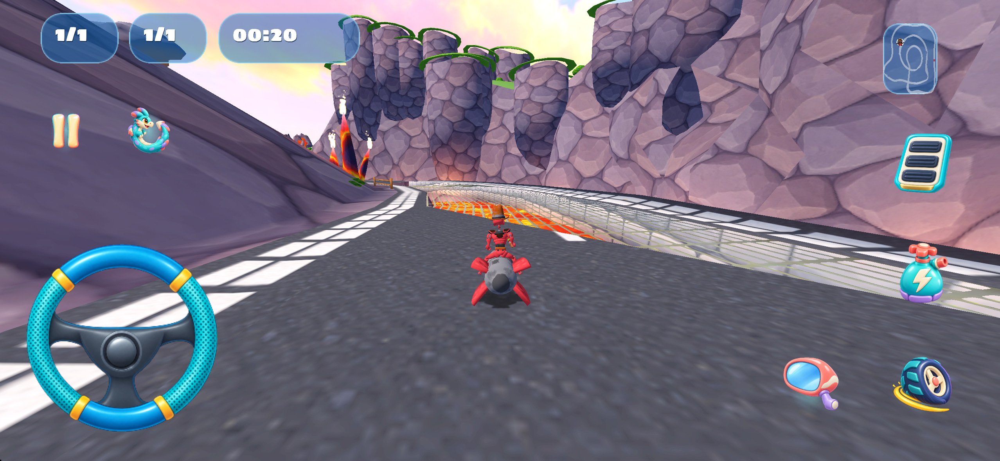
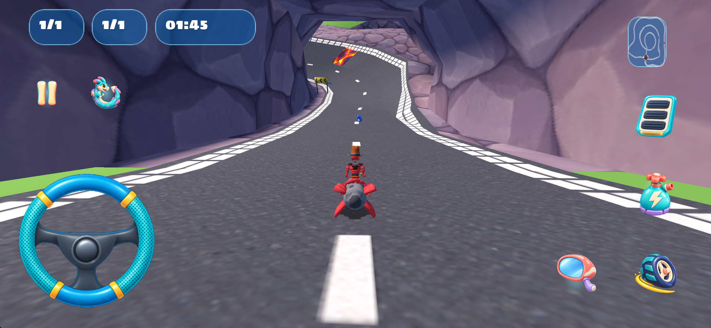
Предыдущая доработка — V24: каменная фактура сохранена, дым и факелы
По замечанию «С текстурой камня было лучше» сохранены нынешний Rock13_col.jpg и его общая копия размером 39 938 байт: SHA-256 6c765884a7846501355a429f3548d2df78698798a97a0318aefe358d0bdafdfd. Пиксели, UV камня, каменные грани и прежние размещения не менялись. Текстура не заменялась одноцветной палитрой.
У трёх моделей дыма изменены только цвета вершин и удалены больше не используемые текстурные координаты. Нижние поверхности получили тёплый оранжевый оттенок, верхние — холодный серый. Это заранее заданная окраска, а не динамическое освещение лавой. Геометрия, нормали, индексы, габариты, центры, направления и существующие размещения дыма совпали с V23. Использован прежний общий материал цвета вершин; новых пикселей или авторских материалов нет. Старые файлы палитр оставлены и включены в вес карты.
На шести башнях размещён существующий бронзовый факел из пула. Его геометрия, четыре материала, изображения, анимация пламени и конфигурация искр переиспользуются без изменения. Факел и эффект уже присутствуют в установленном приложении: новые файлы факела не добавляются, карта хранит шесть координат и ссылки на библиотеку. Размер модели с реально используемыми изображениями не изменился, 0%. Конфигурация эффекта сохранена в Blender как исходный XML; это не утверждение о воспроизведении частиц в Blender.
| Модель дыма | Исходная модель с текстурой, байт | V24, байт | Изменение |
|---|---|---|---|
| AshCloud.spm | 21,401 | 15,446 | -27.83% |
| AshColumn.spm | 18,901 | 16,886 | -10.66% |
| PyroclasticFlow.spm | 11,434 | 10,486 | -8.29% |
| Вес | Результат |
|---|---|
| Карта + все новые общие игровые ресурсы, включая исторические варианты | 6,612,071 байт |
| Интегрированный V1 | 7,693,535 байт |
| Уменьшение относительно V1 | 1,081,464 байт; 14.06% |
| Изменение относительно V23 | +983 байт |
| Новые файлы факела в приложении | 0 байт; существующая библиотека 84,811 байт переиспользована |
Верхний предел +20% проверен по весу каждой модели с используемой текстурой. Полигональная сетка этим процентом не ограничивается. Само полотно, исходные столкновения, сценарии и программные точки/линии сохранились. Независимая проверка габаритов новых факелов относительно 2 032 защищённых треугольников дороги дала запас 8.246 м. Все прочие файлы кандидата совпали с V23.
Blender открывается: активны 35 прототипов, 92 определения материалов и 339 общих частей. Проверены 8,634 угла новых прототипов; остальные 609 мешей совпали с V23 по геометрии, UV, нормалям, цветам, матрицам и материалам. Четыре определения материалов факела взяты из существующего пула. В каноническую библиотеку добавлены только три прототипа дыма, без новых материалов или изображений. В ведомости 322 ресурсов: реальные пути, хеши и зависимости проверены. Исправлен отсутствовавший индекс уже существующей конфигурации искр; её игровой файл не менялся.
Один полный круг Time Trial в симуляторе завершился естественным результатом #1, без принудительной победы. На кадре 40 карт на дороге; на кадре 80 он летит под краем рампы; на кадре 140 вновь на дороге; результат снят на 190-й секунде. В исходном V1 уже наблюдалось опасное прохождение рампы. Причина не исправлена, все регрессии не исключены. Временные карты и скопированные ресурсы удалены из установленного приложения; донорские библиотеки и конфигурации эффекта совпадают с исходными байтами. Предупреждения материалов совпали с V23.


Все изображения сняты без ретуши. Общий диагностический вид из движка показывает факелы и окраску дыма, но не является дорожным игровым кадром. Два игровых кадра приведены ниже.

Точное сходство с референсом ещё не достигнуто. Большие каменные стены, повторяющиеся уступы, пропорции замка и композиция атмосферы требуют работы. Основная карта, итоговый пользовательский .blend и превью пока V1. Размер новой сборки приложения, производительность, обратный режим и вся кампания здесь не проверялись.
Blender V24 · Дым и факелы · Вес и сохранность · Проверка Blender · Игровой круг · Общий пул
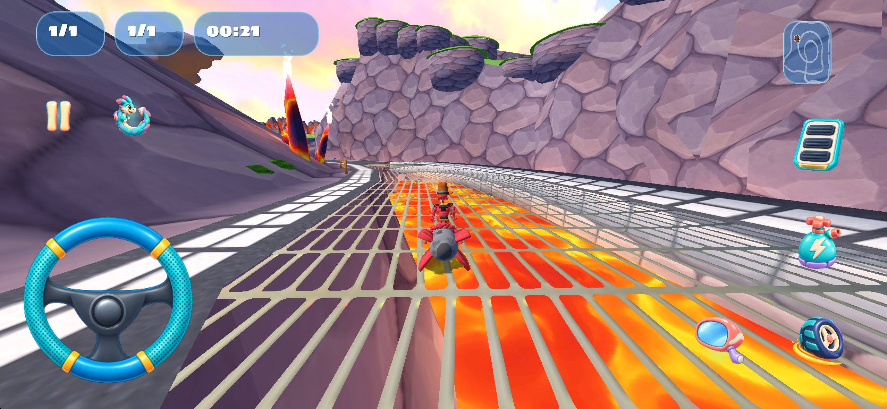
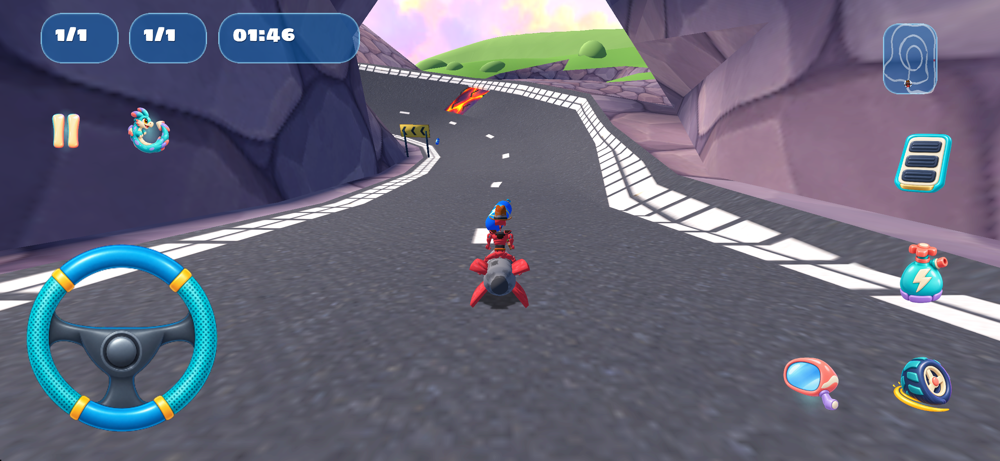
Предыдущая доработка — V23: объём крупных площадок на заднем плане
Две большие зелёные площадки, ранее состоявшие из шести и четырёх крупных граней, получили плавный внутренний подъём. Края сохранили прежние позиции; новые вершины подняты максимум на 35,62 и 32,17 м. Все остальные 1 790 грани общей модели V20, их вершины, UV, нормали и цвета сохранены. В общей модели теперь 2 710 треугольников. Она заменяет одно координатное размещение прежней общей модели; геометрия не копируется на каждый экземпляр.
Ранее намеченные компоненты 12/13/15 оказались узкими полосами вдоль дороги, поэтому их оставил без изменений и исправил план. Само полотно, проезды, исходная геометрия столкновений и все программные точки/линии сохранились. Все файлы карты V22 точно совпали, кроме имени одной библиотеки в scene.xml. Исходная общая библиотека V20 сохранена. Габарит активной геометрии всей общей модели, начало координат, оси и матрица размещения прежние; высоты отдельных двух площадок изменены внутри общего габарита.
Каменная текстура размером 39 938 байт и её UV сохранены по замечанию пользователя. Прежняя зелёная палитра переиспользована; новых изображений, пикселей или материалов нет. Независимая проверка всех новых граней дала минимальное расстояние до 2 032 защищённых треугольников проезда 218.177 м. Погрешность положения новых вершин краёв относительно исходных граничных сегментов — менее 0,0001 м.
| Измерение | Результат |
|---|---|
| Исходный декоративный регион с исходной реально использованной текстурой | 1,081,362 байт |
| Новый общий рельеф + точная исходная физическая модель + используемая палитра | 73,701 байт; -93.18% |
| Карта + все добавленные общие игровые ресурсы, включая сохранённые ранние варианты | 6,611,088 байт |
| Интегрированный V1 | 7,693,535 байт |
| Уменьшение относительно V1 | 1,082,447 байт; 14.07% |
| Добавлено относительно V22 | 59,135 байт |
Предел +20% проверен именно по модели с текстурой. Число полигонов не ограничивалось этим процентом. Базовый декоративный регион сопоставлен с моделью до переделки и её Rock13_col.jpg; это сравнение не с маленькой промежуточной палитрой. Размер приложения заново не измерялся.
В Blender проверены 8 130 углов новой модели, 333 общие части и 180 навигационных квадов. Остальные 610 мешей совпали с V22 по геометрии, UV, нормалям, цветам, матрицам и материалам. Активны 34 прототипа и 88 материалов; старый прототип сохранён скрытым. Новый прототип добавлен в каноническую библиотеку с прежним материалом. Все 304 ресурсов ведомости имеют реальные файлы, совпадающие размеры/хеши и разрешённые зависимости.
В симуляторе выполнен один полный круг Time Trial, один карт, seed 4, естественный результат #1. На сохранённых кадрах 40/80/140 карт находится на дороге; кадр результата снят на 190-й секунде после запуска. Это не доказывает отсутствие выездов между кадрами. Ранее в неизменённом V1 уже наблюдалось опасное прохождение рампы; его причина не исправлялась и все регрессии не исключены. Кадры сняты без ретуши. Временные карты и скопированные ресурсы удалены из установленного приложения, донорская библиотека не изменена; предупреждения материалов совпали с V22.

Два дорожных кадра ниже показывают текущий материал и окружение. Для формы дальних площадок отдельно сохранены диагностические виды из одинаковой камеры: V22 и V23. Они сняты в движке, но не являются игровыми кадрами. Общий вид показывает сохраняющиеся недостатки композиции.


Сходство с референсом ещё не достигнуто: большие каменные стены, повторяющиеся уступы, пропорции замка и освещение атмосферы требуют работы. Основная карта, итоговый пользовательский .blend и превью пока V1. Новая сборка приложения, производительность, обратный режим и вся кампания здесь не проверялись.
Blender V23 · Новый рельеф · Вес и сохранность · Проверка Blender · Игровой круг · Общий пул
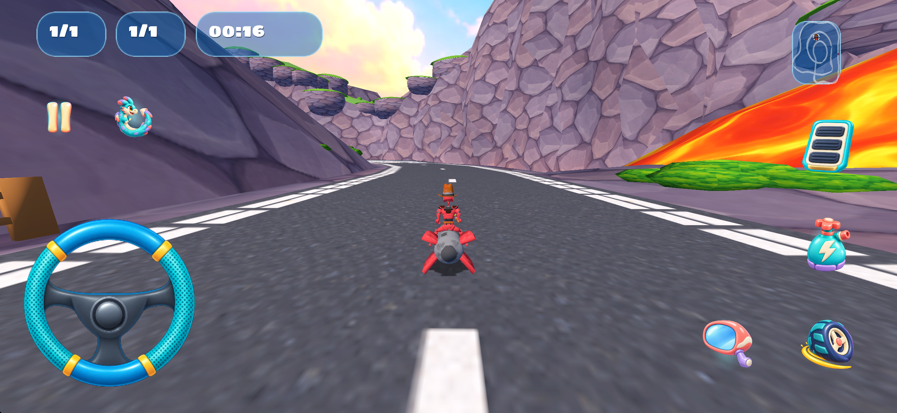
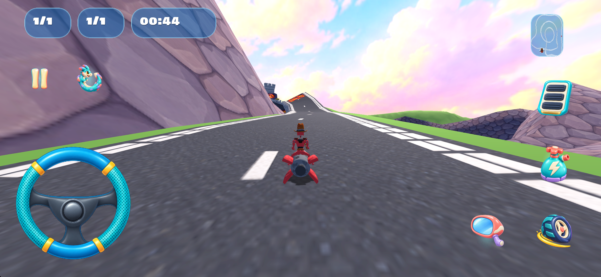
Предыдущая доработка — V22: каменная фактура сохранена, уступы шире
По замечанию пользователя сохранена текущая текстура камня размером 39 938 байт: пиксели, UV и исходные цвета вершин не изменены. Форма общей копии уступа стала менее регулярной; зелёный верх закруглён внутрь прежнего габарита. Один SPM с 432 треугольниками используется в 58 размещениях по координатам. Исходная общая модель V16 и донорский объект сохранены.
Изменены только 58 ранее добавленных декоративных уступов: 56 стали шире в 1,55 раза и ниже до 0,83 прежней высоты, два — шире в 1,35 раза и ниже до 0,88. Их горизонтальные позиции, направления и верхняя мировая высота сохранены; вертикальное начало координат размещения сдвинуто для сохранения этой высоты. Локальные размеры, начало координат и оси самой общей модели сохранены. Мировые размеры новых декоративных экземпляров изменены намеренно. Исходные объекты карты, все другие файлы V21, дорога, физические меши и программные точки/линии не менялись.
Проверенный запас ограничивающей сферы до 2 032 защищённых треугольников проезда — 2.797 м. Основания расположены минимум на 4.611 м ниже исходного рельефа в центральной точке каждого размещения; это проверка центра, а не всей расширенной площади опоры.
| Измерение | Результат |
|---|---|
| Исходный объект пула с обеими текстурами | 99,488 байт |
| Адаптированный уступ с используемой каменной текстурой | 46,303 байт; -53.46% |
| Карта + все новые общие игровые ресурсы, включая сохранённые ранние варианты | 6,551,953 байт |
| Интегрированный V1 | 7,693,535 байт |
| Уменьшение относительно V1 | 1,141,582 байт; 14.84% |
| Добавлено относительно V21 | 6,388 байт |
Предел +20% выполнен для веса модели с используемыми текстурами. Количество полигонов приведено только для информации. Новых файлов текстур, пикселей и материалов нет. Повторные размещения не создают отдельные копии SPM; дополнительные записи координат включены в размер scene.xml. Размер приложения заново не измерялся.
При повторном открытии Blender 493 прочих мешей точно совпали с V21 по геометрии, UV, нормалям, цветам, матрицам и материалам. У 116 частей декоративных уступов заменены общая геометрия и матрицы. Два новых прототипа используют прежние материалы; активны 34 прототипа, 88 материалов и 333 общие части. Проверены 1 296 углов новых прототипов и 180 навигационных квадов. Старые прототипы сохранены скрытыми. Два новых объекта добавлены в каноническую библиотеку; все 302 ресурсов ведомости имеют реальные файлы с проверенными хешами и зависимостями.
Полный круг Time Trial: один карт, один круг, seed 4, естественный результат #1 на 190-й секунде. На 80-й секунде карт находится в воздухе под краем рампы; на 140-й он снова на дороге. При сравнительном запуске неизменённого V1 в том же приложении, режиме и seed также наблюдается опасное прохождение рампы и финиш. Это подтверждает наличие проблемы до текущей доработки, но один прогон с кадрами по времени не исключает всех регрессий и не доказывает одинаковую причину. Дорога и исходная геометрия столкновений сохранены; безошибочное прохождение AI не заявляется.


Ниже два игровых кадра без ретуши. Новые пропорции уступов лучше видны на общем диагностическом виде в движке. Слишком бледная проба окраски отклонена, исходные зелёные цвета вершин возвращены. Временная карта и скопированные ресурсы удалены из установленного приложения; донорская библиотека не изменена. Предупреждения о материалах совпали с V21.

Сходство с референсом ещё не достигнуто: остаются плоские площадки рядом с дорогой, большие повторяющиеся каменные стены, пропорции замка и освещение атмосферы. Основная карта, итоговый пользовательский .blend и превью пока V1. Новая сборка приложения, производительность, обратный режим и вся кампания здесь не проверялись.
Blender V22 · Общие уступы и размещения · Вес и сохранность · Проверка Blender · Игровой круг · Сравнение с V1 · Общий пул
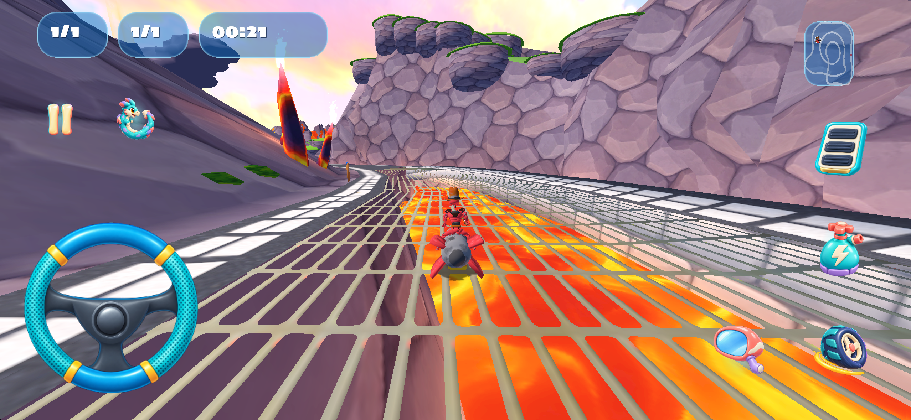
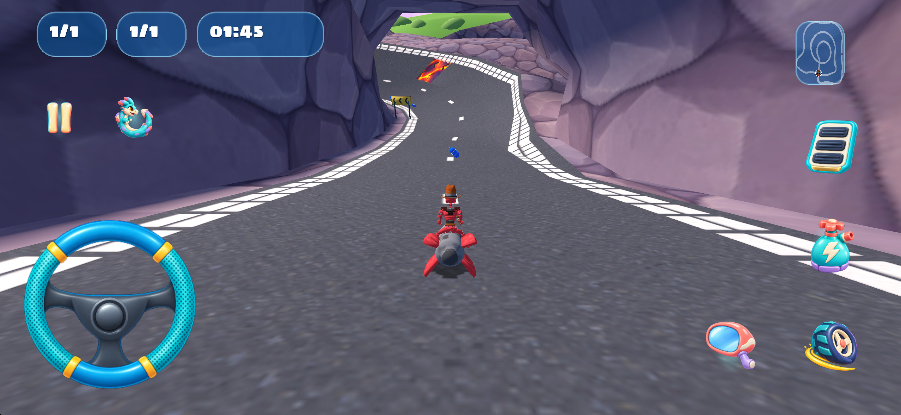
Предыдущая доработка — V21: округлая вершина центрального уступа
Передняя центральная зелёная площадка из восьми крупных граней заменена округлой вершиной с плавным краем. Контур получен сглаживанием исходного восьмиугольного края внутрь его прежнего пятна; верх плавно поднимается до прежней максимальной высоты. Добавлен небольшой каменный стык с исходным уступом. Новая общая модель содержит 480 зелёных и 64 переходных каменных треугольника и ставится одной записью координат.
Сохранены все 64 исходные каменные грани центрального объекта: геометрия, UV, нормали, цвета и текущая текстура размером 39 938 байт. Общие размеры полного центрального уступа из первоначальных 72 граней, начало координат и оси не изменились. Зелёная вершина сама получила новую форму; утверждение о сохранении габарита относится к полному исходному объекту вместе с его каменным основанием. Исходные восемь граней столкновений сохранены в отдельной точной физической модели. Дорога, другие проезды, игровые точки/линии и сценарии не изменены. Проверенное минимальное расстояние от всех новых граней до 2 032 защищённых треугольников проезда — 14.093 м.
Зелёная палитра и каменная текстура переиспользованы из общего пула. Новых игровых файлов текстур, пикселей, материалов и изображений Blender нет. Все прочие файлы V20, 58 уступов, 32 холма и клубы дыма сохранены. Первую широкую эллиптическую форму отверг после просмотра в движке: она выглядела нависающим диском. Проба и остановленный после 40 секунд запуск находятся только в архиве итераций. Итоговый V21 использует более узкий контур по исходному краю.
| Измерение | Результат |
|---|---|
| Полный исходный центральный объект из 72 граней с исходной текстурой до переделки | 96,205 байт |
| Новая вершина + сохранённая каменная часть + исходные столкновения + обе фактически используемые текстуры | 52,656 байт; -45.27% |
| Карта со всеми добавленными общими игровыми ресурсами и сохранёнными ранними собственными вариантами | 6,545,565 байт |
| Исходный интегрированный V1 | 7,693,535 байт |
| Уменьшение относительно V1 | 1,147,970 байт; 14.92% |
| Разница с промежуточным V20 | +11,655 байт |
Предел +20% проверен по весу полного исходного объекта с исходной реально использованной текстурой Lava_004_COLOR.jpg из модели до переделки. Все 72 исходные грани сопоставлены по позициям. Сохранённая каменная часть включена в новый вес через отдельный SPM для учёта размера, вместе с его заголовком; этот файл не добавляется в приложение. Число полигонов не ограничивалось ±20%. Вес приложения здесь не измерялся.
При повторном открытии Blender 605 прочих мешей точно совпали с V20 по геометрии, UV, нормалям, цветам, матрицам и материалам. В изменённом смешанном меше сохранены 596 прежних граней, их позиции, UV, цвета, матрица, материалы и нормали. Проверены 1,656 углов новой вершины и исходного физического меша, 333 общие части и 180 навигационных квадов. Один новый прототип с прежними материалами добавлен в каноническую библиотеку. Все 299 ресурсов ведомости имеют реальные файлы с проверенными хешами и зависимостями.
Выполнен полный круг Time Trial в симуляторе: один карт, один круг, seed 4, естественный результат #1. На 80-й секунде карт прижимается к стене, на 140-й виден выезд к лаве; до итогового кадра на 190-й секунде он достиг финиша. Этот прогон подтверждает достижение результата, но не безошибочное прохождение AI или отсутствие прежних проблем маршрута. Ниже два реальных игровых кадра без ретуши. Новая вершина видна на общем диагностическом виде в движке; эти два дорожных кадра сами по себе не доказывают сходство её формы с референсом. Временная карта и её временные ресурсы удалены из установленного приложения. Предупреждения о материалах совпадают с V20.


Работа над соответствием референсу ещё не завершена: остаются плоские площадки рядом с дорогой, повторяющиеся круглые шапки уступов, пропорции замка, освещение дыма и атмосфера. Основная карта, итоговый пользовательский .blend и превью пока V1. Нет заявления о новой сборке приложения, производительности, обратном режиме или полной проверке кампании.
Blender V21 · Новая вершина · Вес и сохранность · Проверка Blender · Игровой круг · Общий пул
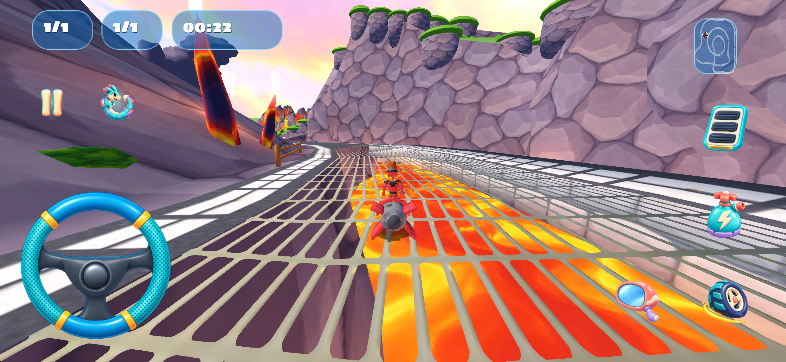
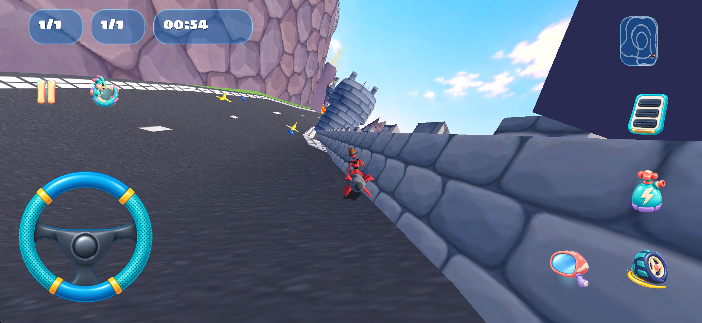
Предыдущая доработка — V20: объём зелёных площадок с сохранением фактуры камня
Сохранены текущие пиксели каменной текстуры, UV, нормали, цвета и геометрия каменных поверхностей V19. По замечанию пользователя «С текстурой камня было лучше» камень не заменён плоским цветом. Эта фактура — сохранённый вариант V19 размером 39 938 байт; она не является исходным до переделки изображением Rock13_col.jpg размером 1 065 543 байта.
16 из 33 компонентов зелёного декоративного ландшафта получили дополнительный объём: 427 исходных треугольников преобразованы в 1 800 визуальных треугольников, подняты 552 вершины. Границы площадок, общий локальный габарит, начало координат и оси сохранены; подъём ограничен расстоянием до дороги. Независимая проверка реального расстояния между изменёнными гранями и 2 032 защищёнными треугольниками проезда дала минимум 5.336 м. Исходные столкновения сохранены отдельной точной моделью из всех 427 треугольников с прежними индексами, UV, нормалями и цветами. Дорога и игровые точки/линии не изменены.
Декоративный ландшафт находится в одном общем игровом файле модели и размещается одной записью координат. Переиспользована прежняя зелёная палитра: добавлен один общий файл с новым именем, но с теми же пикселями, без нового материала или нового изображения в Blender. Имена текстуры в заголовках трёх вулканических SPM заменены на этот общий файл; геометрия и все их атрибуты побайтно совпадают с V19. Центральная площадка из восьми граней пока не переделана. 58 уступов, 32 холма и клубы дыма V19 сохранены.
| Измерение | Результат |
|---|---|
| Исходная модель выделенного участка с исходной текстурой до переделки | 1,081,362 байт |
| Новая видимая модель + точная модель столкновений + реально используемая палитра | 57,405 байт; -94.69% |
| Карта со всеми добавленными общими игровыми ресурсами, включая старые собственные варианты | 6,533,910 байт |
| Исходный интегрированный V1 | 7,693,535 байт |
| Уменьшение относительно V1 | 1,159,625 байт; 15.07% |
| Изменение относительно промежуточного V19 | +43,331 байт |
Предел +20% относится к весу модели с текстурой. Число полигонов не ограничивалось ±20%. Для исходного участка взята геометрия, сопоставленная с оригинальной моделью до переделки, и её исходная текстура размером 1 065 543 байта; сравнение не подменено промежуточной палитрой V19. Вес приложения этой проверкой не измерялся.
Blender повторно открыт и проверен: 603 прочих меша сохранили геометрию, UV, нормали, цвета, матрицы и материалы; исходный зелёный меш точно скопирован в скрытую модель столкновений. Проверены 5 400 углов новых полигонов, все 332 общие части и 180 навигационных квадов. Один новый прототип зарегистрирован в канонической библиотеке; 296 ресурсов ведомости имеют реальные файлы, проверенные хеши и зависимости. Старые предупреждения о текстурах движка остались теми же, новых не добавлено.
Выполнен один полный круг Time Trial в симуляторе: seed 4, один карт, естественный результат #1, без принудительной победы. Ниже два настоящих игровых кадра. Общий диагностический вид в движке показывает формы окружения. Скриншоты сохранены без ретуши; временная карта и её временные ресурсы удалены из установленного приложения.


Доработка изолирована: основная карта, итоговый пользовательский .blend и превью ещё V1. Соответствие референсу не завершено: передняя центральная зелёная площадка, плоские компоненты рядом с дорогой, круглые шапки уступов, пропорции замка и освещение ещё требуют работы. Улучшение дальних форм не считается исправлением этих участков. Нет заявления о новой сборке приложения, производительности, обратном режиме или полной проверке кампании.
Blender V20 · Геометрия ландшафта · Вес и сохранность · Проверка Blender · Игровой круг · Общий пул
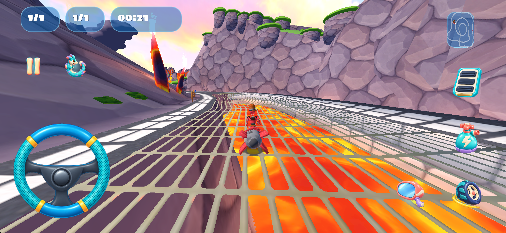
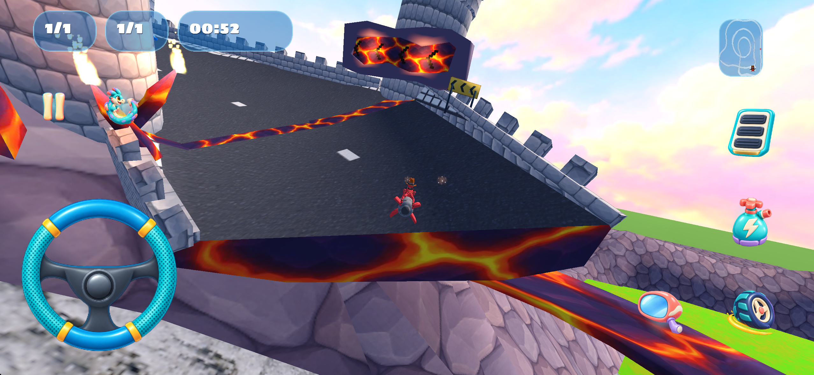
Предыдущая доработка — V19: связные клубы вулканического дыма
Три объёмных эффекта AshCloud, AshColumn и PyroclasticFlow переделаны из раздельных шаров в связные неровные шлейфы. Форма получена объединением перекрывающихся объёмов с последующим уменьшением числа треугольников. Каждый эффект — одна замкнутая поверхность. Существующие материалы и пиксели дымовой палитры переиспользованы; новых текстур и материалов нет. Положение, поворот, масштаб, начало координат, оси и фактические локальные габариты каждого эффекта совпадают с V18.
Каменная текстура и прежние UV сохранены. Все остальные файлы карты побайтно совпадают с V18, включая основной SPM, дорогу, столкновения, расстановку, текстуры, навигацию, игровые точки/линии и сценарии. 58 уступов и 32 зелёных холма по координатам сохранены.
| Модель | Вес с текстурой относительно исходного V1 | Сетка V19 |
|---|---|---|
| AshCloud.spm | 21,401 → 15,661 байт; -26.82% | 960 треугольников, 482 вершин |
| AshColumn.spm | 18,901 → 17,101 байт; -9.52% | 1050 треугольников, 527 вершин |
| PyroclasticFlow.spm | 11,434 → 10,694 байт; -6.47% | 650 треугольников, 327 вершин |
Верхний предел +20% проверен по весу каждой исходной модели с её реально используемой текстурой. Число полигонов не ограничивалось ±20%. Относительно промежуточного V18 эти модели стали детальнее и суммарно тяжелее на 19 061 байт; это включено в итоговый вес. Карта со всеми добавленными общими игровыми ресурсами и сохранёнными ранними вариантами весит 6,490,579 байт против 7,693,535 байт V1: уменьшение на 1,202,956 байт (15.64%). Вес приложения этим измерением не определяется.
Повторное открытие Blender подтвердило неизменность геометрии, UV, нормалей, цветов, матриц и материалов 595 прочих мешей. Проверены 7 980 углов новых полигонов; все 331 общие части и 180 навигационных квадов сохранены. Три новых прототипа зарегистрированы в канонической библиотеке с прежними материалами. Все 292 ресурсов ведомости, физические пути, хеши и зависимости проверены.
Выполнен полный круг Time Trial: один карт, один круг, seed 4, естественный результат #1, без принудительной победы. Ниже два реальных игровых кадра. Полный силуэт дыма виден на общем диагностическом виде из движка. Скриншоты сохранены без ретуши. Временные ресурсы пробного запуска удалены из установленного приложения.


Первый гладкий вариант выглядел трубой и отвергнут после просмотра в движке. Дефекты сетки в следующих пробах выявлены проверками до сохранения замены; эти пробы находятся только в архиве итераций. Текущий вариант прошёл независимую проверку замыкания, связности, направления граней, габаритов и веса.
Визуальное соответствие референсу ещё не завершено: остаются широкие плоские зелёные поверхности, пропорции скал и замкового окружения, освещение дыма и атмосфера. Основная карта, итоговый пользовательский .blend и превью пока V1. Нет заявления о новой сборке приложения, производительности, обратном режиме или полной проверке кампании.
Blender V19 · Модели дыма · Вес и сохранность · Проверка Blender · Полный игровой круг · Общий пул
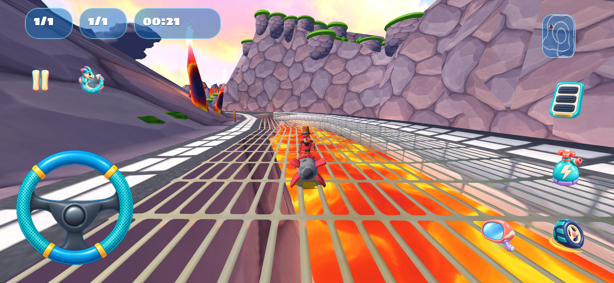
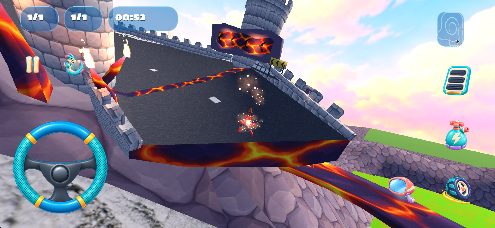
Предыдущая доработка — V18: каменная фактура сохранена, добавлены зелёные холмы
По замечанию «С текстурой камня было лучше» прежнее изображение Rock13_col.jpg и UV существующих каменных объектов сохранены. К V17 добавлены 32 декоративных холма по координатам: одна отдельная копия модели из пула Lap Catch. Коричневые бока исходного объекта не подходили к референсу; вариант с ними отвергнут после просмотра в движке и сохранён в архиве итераций. В текущей копии используется зелёный цвет вершин, полученный из существующей палитры ландшафта. Исходная модель и её текстура в пуле не менялись.
| Показатель | Результат |
|---|---|
| Карта и все добавленные общие игровые ресурсы | 6,471,518 байт против 7,693,535 байт V1. Уменьшение на 1,222,017 байт (15.88%). Включены также сохранённые ранние варианты новых ресурсов. |
| Модель холма с её текстурами | 8,827 → 5,566 байт (-36.94%). 360 треугольников, 222 вершины; геометрия, нормали, оси, центр и локальные габариты исходные. Верхний предел +20% соблюдён. Ограничение ±20% на число полигонов не применяется. |
| Дополнительные игровые файлы | Одна модель на 32 координаты. Новых текстур — 0. Прежний материал цвета вершин переиспользован. |
| Постановка и сохранность | Каждая вершина основания проверена по поверхности: основание заглублено минимум на 0.40 м. Запас описывающей сферы до дороги 6.60 м, до исходных навигационных квадов 8.43 м. Все прежние объекты, файлы моделей, текстур и управления побайтно совпадают с V17. Дорога, физика и игровые точки/линии не менялись. |
| Blender и общий пул | 32 активных прототипа, 88 материалов и 331 общая часть. Один новый прототип зарегистрирован в канонической библиотеке, существующий материал переиспользован. 286 ресурсов в ведомости этой карты с историческими источниками; все пути, зависимости и хеши проверены. |
Повторное открытие Blender подтвердило сохранность геометрии, нормалей, цветов, материалов, UV и матриц 571 прежнего меша. Все 32 новых матрицы соответствуют сцене движка. Выполнен полный круг Time Trial: один карт, один круг, seed 4, естественный результат #1, без принудительной победы. Ниже два сохранённых игровых кадра; расстановка холмов видна на общем диагностическом виде из движка. Скриншоты не ретушировались; округлая чёрная область экрана симулятора сохранена. Временные пробные ресурсы удалены из установленного приложения; существующая библиотека донорской модели не менялась.


Это отдельный кандидат. Основная карта, итоговый пользовательский .blend и превью пока остаются V1. Широкие плоские зелёные поверхности, регулярная цепочка дыма, пропорции замкового окружения и атмосфера ещё отличаются от референса. Нет заявления о завершённом визуале, новом весе приложения, производительности, проверке обратного режима или всей кампании.
Blender V18 · 32 координаты и источник модели · Вес и сохранность · Проверка Blender · Полный игровой круг · Общий пул
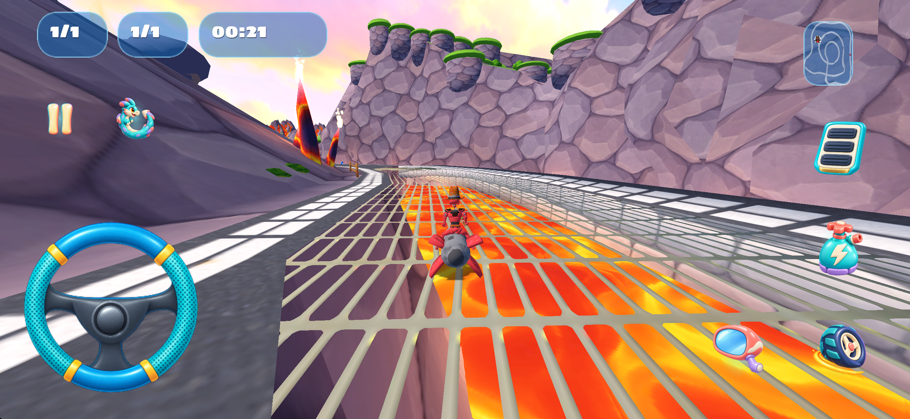
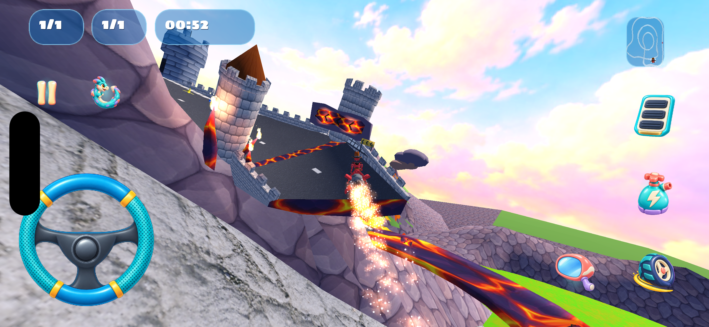
Предыдущая доработка — V17: зелёный верх центральной скалы
Уточнено назначение исходного объекта: центральный купол из 72 треугольников — округлая скалистая опора вокруг дороги, а извергающиеся вулканы находятся отдельно. Пробное заострение опоры отвергнуто после просмотра в движке и сохранено только в архиве итераций. В текущем варианте форма опоры полностью исходная. На боках сохраняются прежнее изображение камня и UV; только восемь верхних граней используют существующую текстуру зелёного ландшафта vr_moss_palette.jpg и её зелёную ячейку UV (0.75, 0.5).
| Показатель | Результат |
|---|---|
| Карта со всеми добавленными общими ресурсами и ранними вариантами | 6,458,548 байт против 7,693,535 байт V1. Уменьшение на 1,234,987 байт (16.05%). |
| Центральная модель со всеми её текстурами | 41,202 → 41,701 байт; +1.21%, ниже верхнего предела +20%. Сравнение по выделенной исходной модели объекта. |
| Геометрия и физика | Все вершины, нормали, цвета, оси, габариты, положения и столкновения исходные. Настройки физики обоих материалов совпадают. Дорога и игровые точки/линии не изменены. |
| Дополнительные игровые файлы | 0 новых моделей и текстур. Изменён только материал верхних граней в прежнем основном SPM. 58 уступов V16 и прежние общие ресурсы сохранены. |
| Blender и пул | 31 активный прототип, 88 материалов и 299 общих частей. Два прототипа каменной части и зелёного верха сохранены в общей библиотеке, прежние материалы и изображения переиспользованы. |
Повторное открытие Blender подтвердило совпадение геометрии, нормалей, цветов и матриц всех 569 ранее существовавших мешей. Изменились только материал и UV восьми верхних граней одного меша. Все прочие текстуры, модели, scene.xml и файлы управления побайтно совпадают с V16. Общая библиотека проверена для карт 6–10 и исторических вариантов.
Проверен полный круг Time Trial: один карт, один круг, seed 4, естественный результат #1, без принудительной победы. Ниже два реальных игровых кадра. Зелёный верх виден на общем виде статической камеры движка; на этом диагностическом кадре присутствует чёрная полоска экрана симулятора. Предупреждения старых неиспользуемых material/gloss объявлений сохраняются.


Это ещё отдельный кандидат. Основная карта, итоговый пользовательский .blend и превью остаются V1. До референса остаются широкие плоские зелёные поверхности, форма и свет дыма, пропорции замкового окружения и атмосфера. Остальные карты и общий этап наполнения 1–10 не объявляются завершёнными.
Blender V17 · Изменение верха · Вес и сохранность · Проверка Blender · Игровой проезд · Общий пул
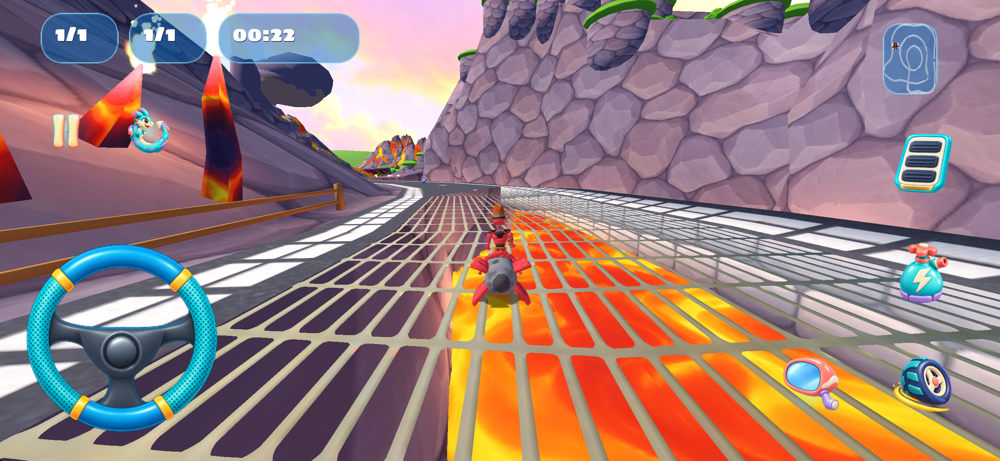
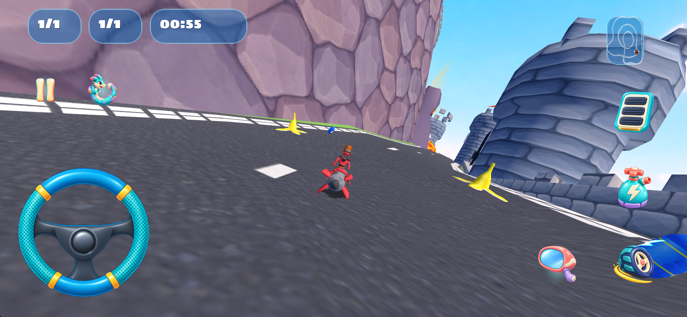
Предыдущая доработка — V16: каменная фактура и общие округлые уступы
Прежнее изображение Rock13_col.jpg сохранено без изменения пикселей. На четырёх исходных моделях скал, включая центральную гору, сохранены геометрия, UV, нормали, цвета и габариты. Они используют общий файловый псевдоним fluxara_volcano_stone_shared_v16.jpg. Та же единственная текстура используется новой общей моделью уступа.
В пуле выбран реальный объект shared-grassy-island-v1 — округлый земляной остров с травяным верхом. Изменена только его копия: верх сжат в зелёный кант, земляная часть вытянута в пределах прежних локальных габаритов и покрыта прежней текстурой камня. Для этой новой копии настроены цилиндрические UV и вершины шва. Начало координат, оси, крайние габариты и горизонтальные координаты источника сохранены. 58 размещений на карте ссылаются на один файл модели; новых картинок не создавалось.
| Показатель | Результат |
|---|---|
| Карта со всеми добавленными общими ресурсами и сохранёнными ранними вариантами | 6,458,370 байт; V1 — 7,693,535; уменьшение на 1,235,165 байт (16.05%) |
| Адаптированная модель с используемой текстурой | 99,488 → 46,303 байт; -53.46%. Верхний предел +20% выполнен. Процент сетки не является ограничением. |
| Размещения и сетка нового общего объекта | 58 координатных размещений, один SPM, 432 треугольника и 244 вершины на модель. В Blender — 116 частей, использующих два общих меша. |
| Свободное расстояние до дороги / навигационных линий | Не меньше 3.88 / 4.02 м для внешних ограничивающих сфер новых уступов. |
| Неиспользуемые копии старого неба | Шесть файлов magma_sky, 748,240 байт. Удалены только из собственной копии кандидата; исходники и архивы сохранены. Текстуры активного неба dp_sky, IBL и атмосферы оставлены. |
| Общая библиотека Blender | 30 активных прототипов, 88 материалов, 299 общих видимых частей. Добавлены два прототипа и один материал цвета вершин; прежний материал и упакованное изображение камня переиспользованы. |
Полотно дороги, игровые точки, линии, исходная физика и все прежние размещения сохранены. Проверки повторного открытия Blender подтвердили точное совпадение геометрии, UV, нормалей, цветов, матриц и материалов 451 ранее существовавшего меша с V15. Новые габариты не перекрывают дорогу и навигационную сетку. Общая библиотека проверена для карт 6–10, включая сохранённое свечение окон.
Полный круг в Time Trial, один карт, один круг, seed 4, завершился естественно с результатом #1. После удаления только неиспользуемых копий неба выполнены отдельный запуск и игровые кадры, а также общий вид статической камеры движка. Новые объекты и прежнее небо загружаются. Прежние предупреждения об отсутствующем benchmark replay и старых объявлениях lava_1 / gloss остаются; новых ошибок поиска камня или удалённых файлов неба не обнаружено. В одном дополнительном кадре после очистки видна чёрная полоска интерфейса; отсутствие всех дефектов HUD не заявляется.


Визуальное соответствие ещё не закончено: широкие плоские зелёные поверхности, центральный купол, форма дыма и освещение отличаются от референса. Основная карта, итоговый пользовательский .blend и превью пока остаются V1; новый билд приложения не создавался. Ниже два реальных игровых кадра кандидата V16.
Blender V16 · Уступы и вес · Сохранность · Очистка копий · Игровые проверки · Общая библиотека
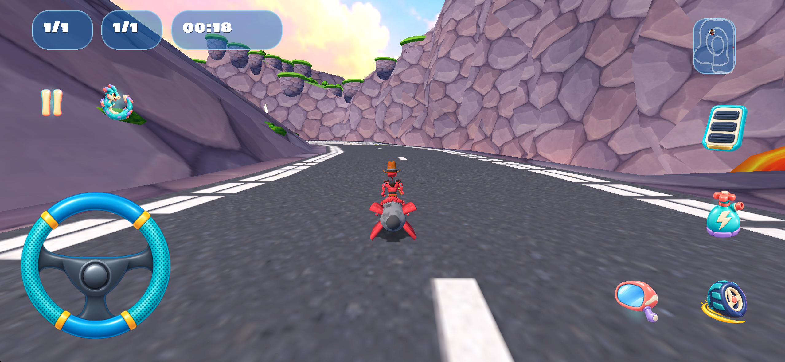
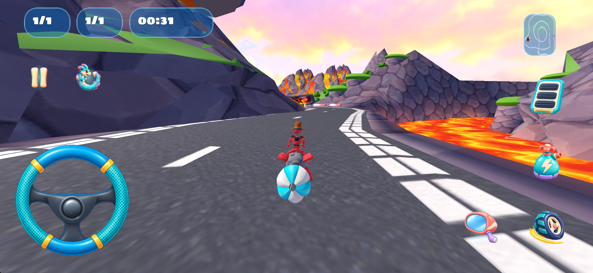
Предыдущая доработка — V15: общие каменные башни и плотный дым
Исходная фактура Rock13_col.jpg сохранена на четырёх моделях скал и центральной горе. Для замковых башен использована уже имеющаяся серая кладка castelwall.jpg с новым общим именем файла; пиксели изображения прежние. Две прежние башни и ещё 14 исходных вертикальных башен заменены видимыми частями из общей библиотеки. Один файл корпуса используется обеими разновидностями башен, красная крыша и флаг хранятся по одному экземпляру. Положение, оси, общие габариты и центры башен сохранены.
Исходные 3,748 треугольников столкновений этих 14 башен перенесены без изменения в скрытые модели только этой карты. Они не входят в взаимозаменяемое окружение. Полотно дороги, игровые линии, точки, файлы управления и остальные размещения сохранены. Над прежними каменными воротами добавлена общая красная крыша. Все новые видимые части — ghost; исходная физика остаётся прежней.
| Показатель | Результат |
|---|---|
| Карта со всеми добавленными общими ресурсами, включая старые варианты | 7,187,015 байт; V1 — 7,693,535; уменьшение на 506,520 байт (6.58%) |
| Все варианты башни с общей текстурой | 8,806 → 10,544 байт; +19.74%, меньше предела +20% |
| Ворота с новой крышей и прежней текстурой | 46,862 → 54,268 байт; +15.80%. Сравнение по эквивалентной выделенной модели прежнего декоративного объекта; его исходная геометрия не изменена. |
| Сетка новой крыши ворот | 336 → 160 треугольников; 15,502 → 7,406 байт. Форма, габариты, оси и красный цвет сохранены. |
| Три модели объёмного дыма | 38,446 → 23,825 байт. У каждой верхний лимит веса модели с текстурой +20% выполнен; прежние палитры, локальные габариты, центры, оси и размещение сохранены. |
| Новые изображения | 0 новых наборов пикселей. Один общий файловый псевдоним прежней кладки, 5,072 байт, уже учтён в сумме. |
| Blender и общая библиотека | 28 активных прототипов, 87 материалов, 183 общие видимые части. Новые данные физически сохранены и внесены в реестр объектов, материалов и текстур. |
Дым уплотнён перекрывающимися неровными клубами; скрытые внутренние треугольники удалены для уменьшения веса. Повторное открытие Blender подтвердило прежние матрицы всех существовавших объектов и геометрию, UV, нормали и цвета всех нетронутых мешей. Общая библиотека проверена для карт 6–10 и промежуточных вариантов, включая свечение окон домов.
Проверен полный круг в Time Trial, один карт, один круг, seed 4: естественное завершение с результатом #1. Принудительная победа не применялась. Ниже два реальных игровых кадра; общий вид получен в статической камере движка. Проверка полной кампании, обратного режима и производительности не заявляется.


До точного визуального соответствия референсу работа продолжается: формы зелёных верхов и скал, пропорции окружения и атмосфера требуют дальнейшей доработки. Основная игровая карта, итоговый .blend и превью пока остаются V1; новый билд приложения не создавался. Этот раздел показывает отдельный проверяемый кандидат V15.
Blender V15 · Объекты и дым · Вес и сохранность · Проверка Blender · Игровые проверки · Общая библиотека
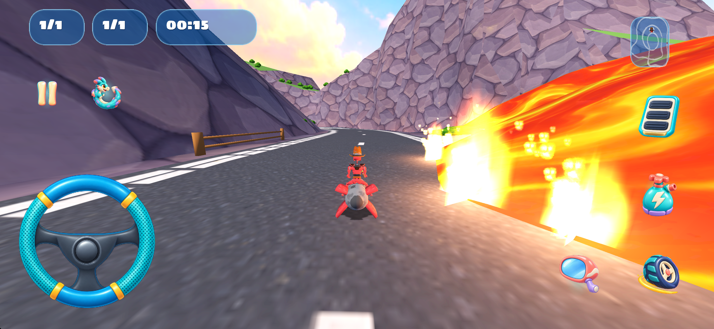
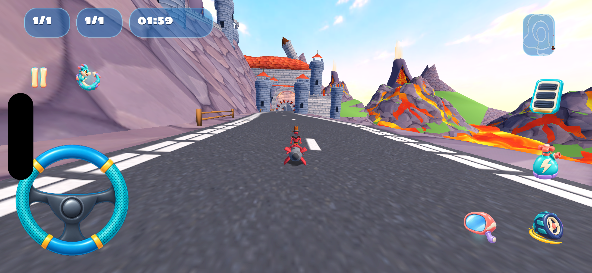
Предыдущая доработка — V14: камень на центральной горе
По просьбе сохранить каменную фактуру исходное изображение Rock13_col.jpg остаётся на четырёх моделях скал. Эта же уже используемая текстура назначена центральной декоративной горе вместо материала каменной арки, из-за которого гора выглядела светлым куполом. Ворота и остальные 532 треугольника с материалом арки сохранены. У горы изменено только назначение материала: все 72 треугольника, вершины, UV, нормали, цвета, габариты и оси прежние.
| Показатель | Результат |
|---|---|
| Карта со всеми добавленными общими игровыми ресурсами | 7,224,604 байт; V1 — 7,693,535; уменьшение на 468,931 байт |
| Основной игровой файл volcano_track.spm | 738,472 → 738,266 байт; уменьшение на 206 байт. Набор уже используемых текстур тот же, их байты не изменились. |
| Дополнительные игровые файлы моделей или изображений | 0. Отдельная модель горы в приложение не добавлена. |
| Вес модели вместе с текстурами | Вес фактического исходного игрового SPM с теми же зависимостями уменьшается; верхний лимит +20% выполнен. Проверка относится к реальному игровому файлу, а не к условному вырезанному фрагменту. |
| Новые данные для переиспользования в Blender | Один прототип горы; материал и изображение взяты из прежней библиотеки. Скрытый прототип не добавляет размещение в игровую карту. |
После повторного открытия Blender проверены геометрия, UV, нормали и матрицы всех прежних объектов, назначение камня только нужным треугольникам и сохранение материала ворот. Общая библиотека проверена для всех карт 6–10 и промежуточных вариантов; материалы светящихся окон домов сохранены.
V14 проверен в двух игровых кадрах и в статическом общем виде движка. Полный круг с извержением и прежней коллизией был пройден в V13, результат #1; после назначения материала в V14 отдельный полный круг не заявляется. Файлы управления, геометрия дороги и столкновений совпадают с V13. Полная кампания, обратный режим и производительность не проверены.
Общая визуальная доработка продолжается: формы горы, замковые стены и плотность дыма пока не соответствуют референсу полностью. Основная игровая карта, итоговый .blend и превью остаются V1; новый билд приложения не создавался.
Blender V14 · Назначение камня · Вес и сохранение · Проверка Blender · Игровые проверки · Библиотека · Общий статический вид в движке

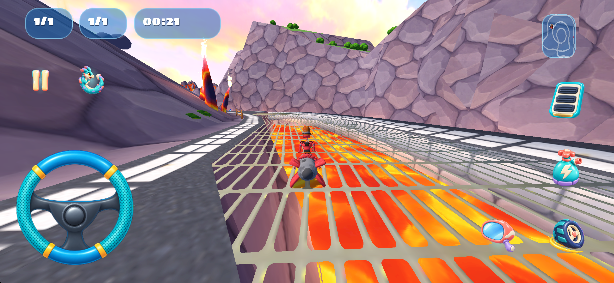
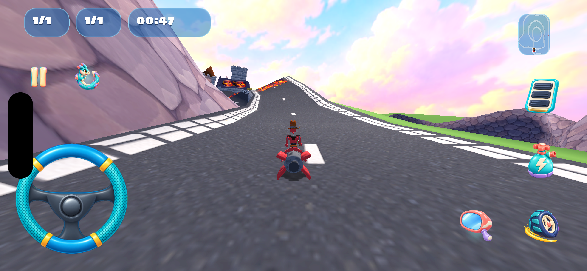
Предыдущая доработка — V13: извержение лавы
Сплошной декоративный столб заменён тремя тонкими изогнутыми струями и 16 искрами. Существующий дымовой шлейф перенесён к струям. Общие габариты эффекта, исходная точка центра и оси сохранены. Прежняя геометрия столкновений хранится в отдельной скрытой модели этой карты и побайтно сохраняет ориентированные исходные треугольники.
Новая модель хранится в общей библиотеке fluxara_driftlib_volcano_fountain_v13; размещение записано координатами. Текстура лавы с прежними пикселями вынесена в общий файл fluxara_volcano_lava_shared_v13.jpg. Внутри варианта карты её дубликата нет. Шесть отдельных вариантов материалов сохраняют прежние настройки; материалы доноров не изменены. Текстура Rock13_col.jpg и исходные UV камня сохранены.
| Показатель | Результат |
|---|---|
| Карта с добавленными общими библиотеками и текстурой | 7,224,810 байт против 7,693,535 в V1; уменьшение на 468,725 байт |
| Модель извержения вместе с текстурой | 59,644 против 52,257 байт; +14.14%, в пределах верхнего лимита +20% |
| Треугольники нового декоративного эффекта | 452; количество справочное, лимит ±20% на сетку не применяется. |
| Общие части объектов в Blender | 152; извержение ссылается на один новый общий меш. |
Проверены исходная геометрия дороги и индексированные атрибуты, игровые контрольные файлы, все неизменяемые меши, прежние UV и нормали. В остальных моделях лавы изменено только имя общей текстуры. В Blender подтверждены связанные меши, настройки материалов и прежние геометрия и размещения; исключения — удалённый визуальный столб и положение его дымового шлейфа. Общая библиотека проверена вместе с материалами карт 6–10 и светящимися окнами домов.
Полный круг Time Trial завершился естественно; результат #1. Сохранён читаемый экран завершения. Полная кампания, обратный режим и FPS этим заездом не проверены.
Соответствие референсу ещё не достигнуто: светлая крупная форма в центре, замковые стены и состав дыма требуют доработки. Основная игровая карта, финальный .blend и превью остаются V1. Новый билд приложения не создавался.
Blender V13 · Сохранение геометрии и вес · Извержение и источник · Проверка Blender · Общая библиотека · Общий статический вид в движке

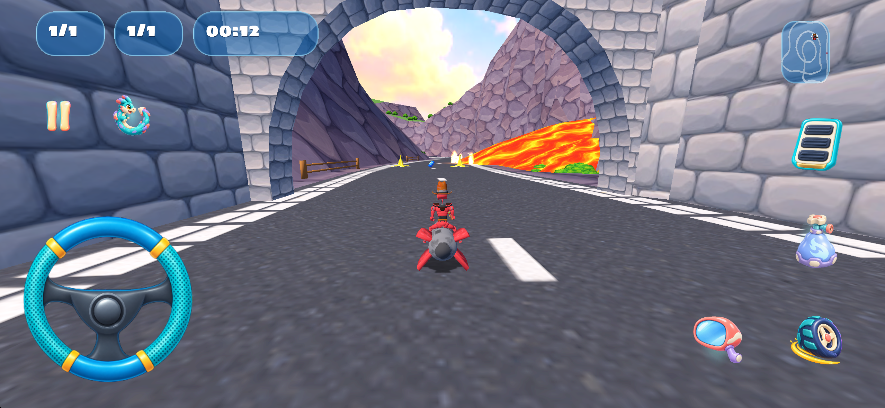
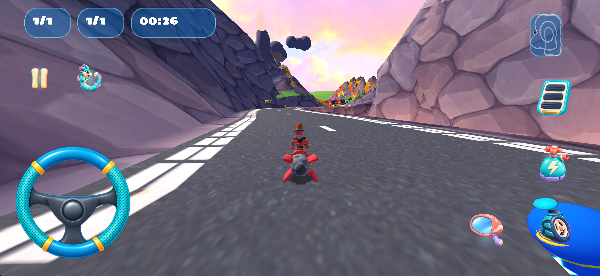
Предыдущая доработка — V12: окружение из пула
На зелёных площадках и пологих склонах добавлены 64 куста из уже используемой общей библиотеки fluxara_driftlib_round_bush_green_v2. В карте хранятся координаты, углы и масштабы, а все 64 размещения ссылаются на одну модель. Новые меши, материалы и текстуры не создавались. Каменная текстура, красные крыши и меньшие дымовые шлейфы сохранены.
| Показатель | Результат |
|---|---|
| Карта и новые общие игровые ресурсы | 7,215,416 байт; меньше V1 на 478,119 байт |
| Добавленные файлы общих моделей/текстур | 0. Рост размещений записан только в scene.xml. |
| Вес моделей вместе с текстурами | 0% изменения; все исходные SPM и изображения совпадают с V11. |
| Треугольники со всеми размещениями | 70,801; справочно, без ограничения ±20% на сетку. |
| Части общих объектов в Blender | 151; 64 новых части используют один прежний меш. |
Площадки выбраны по геометрии зелёного покрытия. Проверены опора куста на поверхность, расстояния между кустами и зазор полной ограничивающей сферы относительно треугольников дороги и деревянных поверхностей: минимум 3.92 м. Дополнительная проверка всех 180 навигационных участков дала минимальный зазор 5.95 м. Существующие объекты и их размещения совпадают с V11; дорога, игровые точки и файлы управления сохранены. После открытия Blender подтверждены общие данные меша и неизменность прежних объектов.
Модель и текстура куста в установленном симуляторе побайтно совпадают с ресурсами проекта. Полный круг Time Trial с 64 кустами завершился естественно, результат #1. Полная кампания, обратный режим и FPS этим тестом не проверены.
Визуальная доработка ещё продолжается: крупные формы вулкана, лава, замковые стены и дым пока далеки от референса. Основная карта, финальный .blend и игровое превью остаются V1; новый билд не создавался.
Blender V12 · Координаты кустов · Вес · Зазор от навигационной трассы · Заезд · Переиспользование · Статический общий вид в движке

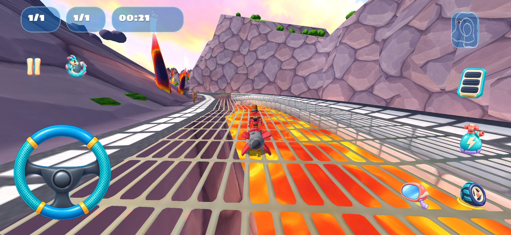
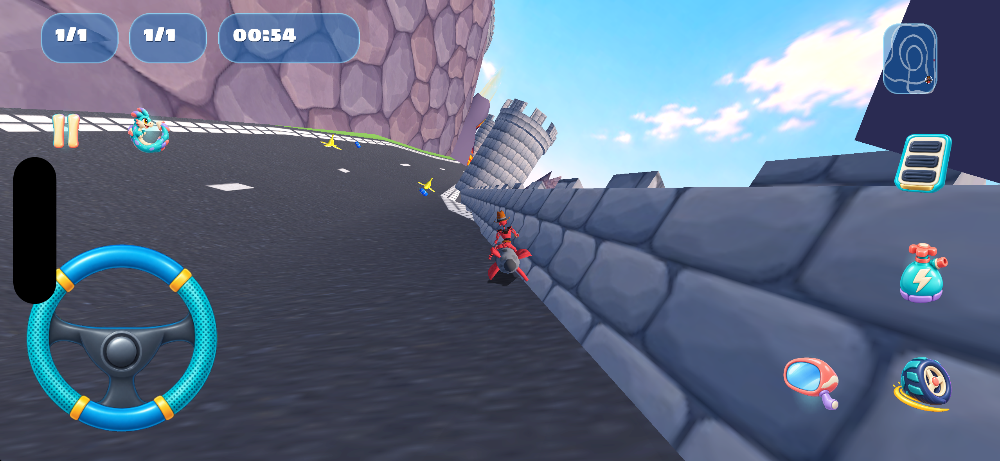
Предыдущая доработка — V11: дым над вулканами
Три ранее оторванных от вулканов дымовых шлейфа уменьшены до 45% прежнего мирового масштаба. Их основания совмещены с верхними кольцами исходных вулканов и заглублены на два метра, чтобы убрать разрыв. Использованы прежние общие модели: новые модели и текстуры не добавлялись. Каменная текстура V10B и красные крыши сохранены.
Все SPM и текстуры побайтно совпадают с V10B. В scene.xml изменены только три размещения декоративного дыма с interaction=ghost. Полотно трассы, игровые точки, условные объекты и движущиеся препятствия совпадают с предыдущим вариантом. Все 23 прототипа Blender имеют прежние вершины, индексы, UV и нормали; новые матрицы трёх размещений проверены после открытия файла.
| Показатель | Результат |
|---|---|
| Модели с текстурами | 0% изменения веса |
| Карта и новые общие ресурсы | 7,202,193 байт; экономия 491,342 байт к V1 |
| Новые игровые файлы библиотеки | 0; ранее созданные V8B/V9 включены в расчёт |
| Заезд | Один круг Time Trial, естественное завершение #1 |
Доработка к референсу продолжается. Старый столб лавы относится к исходным объектам; его роль и поведение сохраняются до отдельной проверки. Стены замка, силуэты скал, лава и форма дыма ещё требуют улучшения. Production, финальный .blend и превью остаются V1; новый билд не создавался. Полная кампания, обратный режим и FPS не проверены.
Blender V11 · Размещения дыма · Сохранность · Вес · Заезд · Общий статический обзор в движке

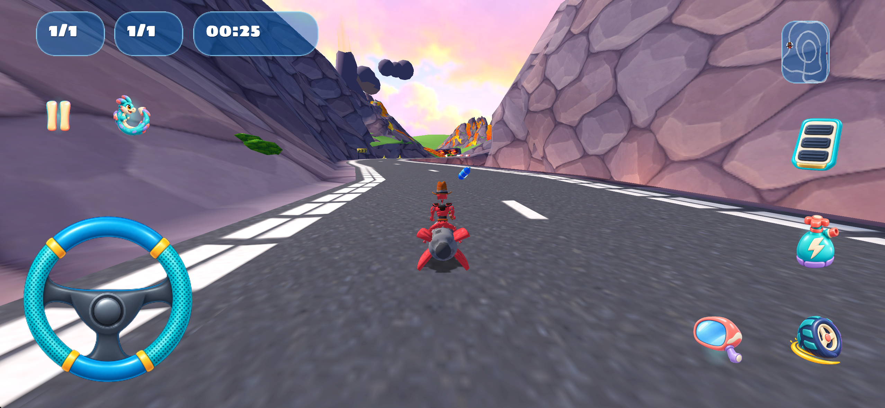
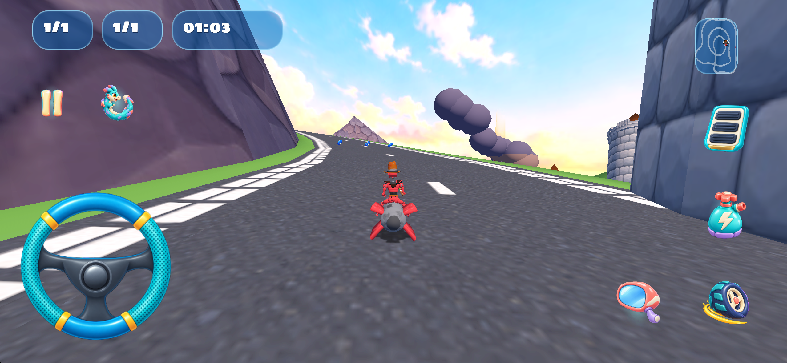
Предыдущая доработка — V10B: возвращена текстура камня
По замечанию «С текстурой камня было лучше» восстановлены исходные каменные текстуры, их UV и материалы во всех четырёх затронутых моделях. Плоский вариант V10 отклонён и оставлен только в истории. Сглаженные декоративные нормали и красные конические крыши двух общих башен сохранены.
| Показатель | Результат |
|---|---|
| Вес каждой восстановленной модели с текстурами | Совпадает с V9: изменение 0%. Верхний предел +20% соблюдён. |
| Карта и все новые общие игровые файлы | 7,202,194 байт; меньше V1 на 491,341 байт (6.39%) |
| Учёт общих файлов | 8,223 байт V9 и 9,082 байт сохранённой V8B; обе библиотеки учтены. |
| Треугольники | 59,281; справочный показатель, ограничение относится к весу. |
Позиции вершин, индексы, габариты и исходные UV восстановленных моделей проверены по SPM. Дорога, игровые точки и файлы управления совпадают с исходными. В Blender исправлены две нулевые нормали через границы сглаживания, без изменения геометрии; после повторного открытия максимальное отклонение от упакованных нормалей SPM 0.349°. Четыре прототипа используют прежние материалы и текстуры из пула.
Один круг Time Trial завершился естественно, на экране результата читается #1. Полная кампания, обратный заезд и производительность этим тестом не проверены.
Карта ещё дорабатывается к референсу: дым, силуэты скал, замковые стены и лава требуют улучшения. Кандидат проверяется отдельно; основная карта, финальный .blend и превью пока остаются V1. Новый билд приложения не создавался.
Blender V10B · Восстановление текстуры · Вес · Заезд · Проверка Blender · Пул
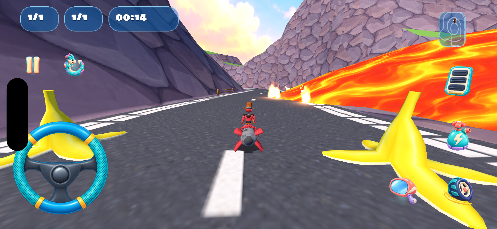
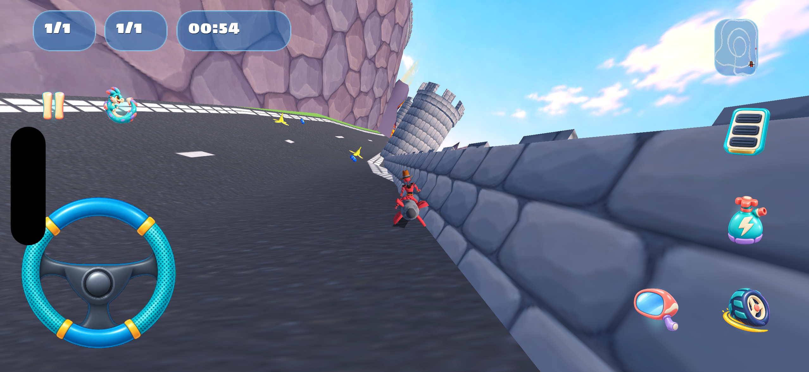
Доработка V9 — настоящие красные крыши
Верх двух общих башен заменён шестнадцатигранной конической крышей. Красный цвет взят из существующей палитры; донор и его материалы не изменены. Основание и оси прототипа, его внешние локальные границы и габариты совпадают с донором. Нижняя геометрия башни сохранена, верхние зубцы и шест заменены крышей.
| Показатель | Результат |
|---|---|
| Модель вместе с текстурой | 8,806 → 7,961 байт; -9.60% |
| Карта с новыми общими файлами | 7,202,194 байт; экономия 491,341 байт к V1 |
| Учёт новых общих файлов | 8,223 байт активной библиотеки V9 и 9,082 байт предыдущей библиотеки V8B, пока сохранённой в ресурсах проекта. Обе копии учтены. |
| Треугольники башни / карты | 344 / 59,281; справочно |
Исходные дорога и игровые XML совпадают, геометрия столкновений сохранена. Проверены Blender, SPM, матрицы размещений, общий каталог и неизменность свечения окон других карт.
Заезд завершился естественно; кадр результата после перезапуска симулятора оказался обрезан из-за портретной ориентации, поэтому читаемая позиция #1 и качественные игровые кадры V9 не заявляются. Ориентация исправлена, отдельный статический обзор переснят. Старые обрезанные кадры сохранены в истории и не используются для визуального согласования.
V9 остаётся кандидатом. Стены замка, скалы, лава и дым требуют дальнейшей доработки. Основная карта, финальный .blend и превью остаются V1; нового билда не было.
Blender V9 · Модель и вес · Все игровые ресурсы · Ограничения проверки заезда · Пул
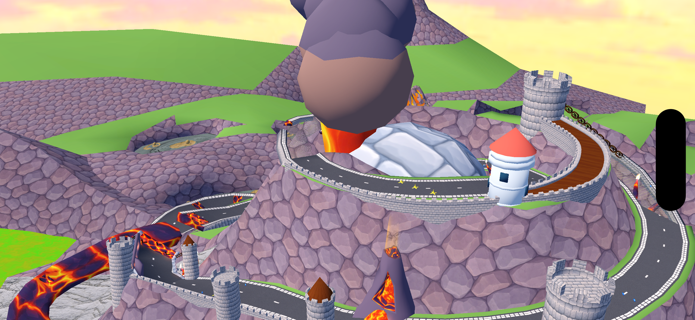
Предыдущая доработка — V8B, две общие башни
Два декоративных башенных блока заменены координатными размещениями варианта модели из пула Lap Catch. Стены и обод башен переведены на серую ячейку существующего атласа, тонкий шест — на красную. Пиксели исходной палитры не изменены. Применён отдельный вариант модели и материала; исходная общая башня и другие карты сохранены.
Красная коническая крыша ещё не реализована. Двадцать граней коричневой детали источника сначала были ошибочно приняты за крышу; проверка геометрии и обзор в игре показали, что это тонкий шест. Старый деревянный конус верхней башни скрыт из видимой геометрии. Его исходные треугольники и треугольники двух старых башен сохранены в двух точных невидимых столкновительных мешах interaction=physicsonly. Геометрия столкновений основной модели вместе с ними совпадает с исходной V7B.
| Показатель | Результат V8B |
|---|---|
| Модель башни вместе с текстурой | 8,806 → 8,817 байт; +0.125%, меньше разрешённого роста +20% |
| Геометрия общей башни | 429 треугольников; вершины, индексы, нормали, локальные границы, начало координат и оси совпадают с донором. Изменены только UV и имя текстуры. |
| Папка карты | 7,184,891 байт |
| Все новые общие игровые файлы | 9,082 байт: SPM, палитра под отдельным именем, node.xml и materials.xml. Отдельная копия палитры учтена, хотя её содержимое совпадает с донором. |
| Карта плюс новые общие ресурсы | 7,193,973 байт; на 499,562 байт меньше основной V1 (7,693,535 байт) |
| Треугольники карты | 59,451; +19.51% к оригиналу. Справочно, без ограничения ±20% на полигоны; включает сохранённые столкновительные меши. |
| Редактируемый проект и пул | 19 прототипов, 87 частей общих размещений. Добавлены 1 прототип и 1 материал в каноническую библиотеку, физический SPM и отдельный файл палитры сохранены в пакете. |
Позиции, нормали, UV, цвета и индексы полотна совпадают с оригиналом. Track.xml, quads.xml, graph.xml, scripting.as и easter_eggs.xml совпадают побайтно. Остальные буферы и старые игровые размещения совпадают с V7B. Модель плюс два невидимых меша содержит точно те же ориентированные треугольники столкновений, что и V7B; свойства использованных старых материалов для физики были стандартными.
Blender-проект повторно открыт. Проверены геометрия и UV изменённых буферов, двух столкновительных мешей и прототипа; UV преобразованы в Blender как u, 1−v. Совпадают все 87 матриц общих частей, исходные XML встроены, отсутствующих текстур нет. Нормали в новых авторских Blender-мешах пересчитываются Blender; неизменность упакованных нормалей проверена в игровом SPM. Пиксели палитры совпадают с донором. Канонические привязки карт 6–10, предыдущих кандидатов и четыре материала светящихся окон проверены.
Временная копия кандидата в iOS Simulator завершила один круг Time Trial с одной машиной, результат #1, без принудительной победы. Сохранены финиш, начало и поворот у лавы. Временные карта и новая библиотека после заезда удалены из установленного приложения. Нового билда не было.


Карта 10 ещё не завершена и не перенесена в основную игровую версию. Серые башни — промежуточный вариант. Конические красные крыши, форма замковых стен, скал, лавовых потоков и плотного дыма ещё не соответствуют референсу. Игровые кадры ниже подтверждают текущий проезд, а отдельный статический обзор показывает размещения башен. Основная карта, финальный .blend и превью сохраняют V1. Полное событие кампании, обратное направление и производительность не подтверждены.
Редактируемый кандидат V8B · Вес башни с текстурой · Вес карты · Сохранность · Заезд · Blender · Пул
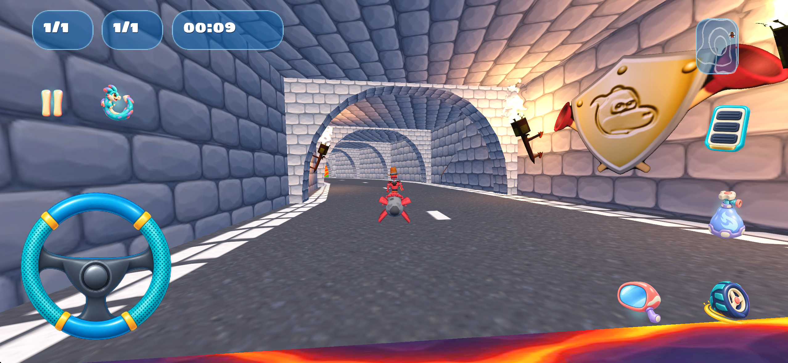
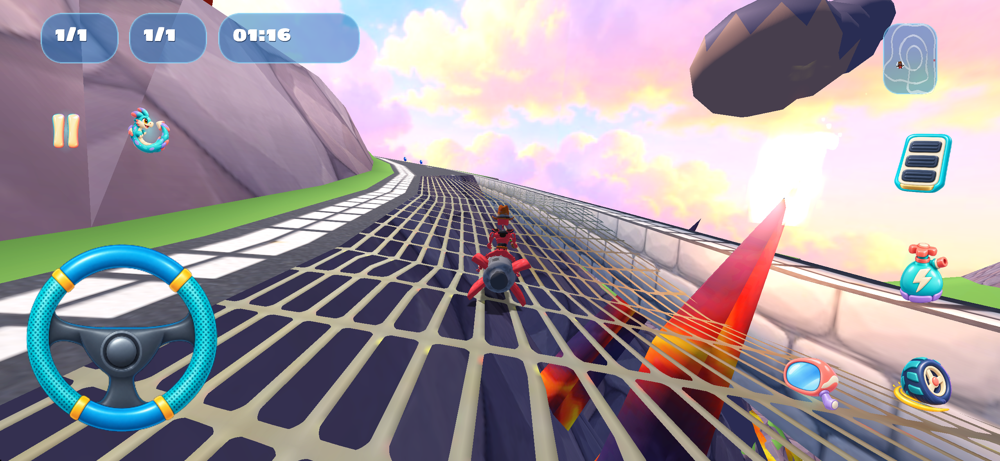
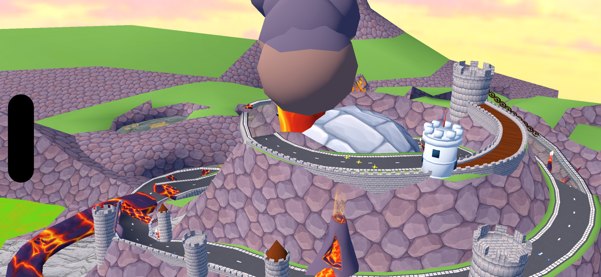
Предыдущий эксперимент — V7B, объёмные клубы дыма
Три дымовых меша пересобраны из 27 округлых объёмных клубов: 11 для AshCloud, 10 для AshColumn и 6 для PyroclasticFlow. Геометрия компенсирует неодинаковые масштабы размещений, чтобы отдельные клубы имели округлые пропорции в мире игры. Исходные локальные границы, центры этих границ, начала координат и оси сохранены с погрешностью менее 0,00002 единицы. Используются две существующие сливово-тёплые палитры; новых игровых текстур и материалов нет.
Восемь декоративных размещений прозрачных карточек объединены с тремя объёмными шлейфами. Изменены позиции и масштабы трёх оставшихся объектов, их направления выставлены в ноль; прежние кривые движения и прокрутка текстур именно этих декоративных эффектов удалены. Все затронутые объекты имеют interaction=ghost. Это явное изменение атмосферы и её размещений; оно не сохраняет старое движение дыма. Исходные игровые объекты и параметры не затронуты.
| Показатель | Результат V7B |
|---|---|
| Папка карты | 7,191,245 байт; на 502,290 байт меньше основной V1 |
| Треугольники карты | 58,593; +17.78% к оригиналу |
| Треугольники трёх мешей | 864 → 880; 768 → 800; 512 → 480 |
| Вес трёх SPM к оригиналам | +8,70%; +0,81%; −0,59% |
| Новые общие игровые ресурсы сверх папки карты | 0 байт |
| Общий пул | 3 новых редактируемых прототипа и 3 SPM зарегистрированы физически; материалы и изображения повторно используются |
Проверка ±20% в этой таблице относится к весу самих трёх мешей. Исходные большие текстуры дыма ранее заменены малыми палитрами, поэтому это не проверка сохранения веса каждого меша вместе с оригинальной текстурой.
Полотно трассы, его вершины, нормали, UV, цвета и индексы совпадают с оригиналом. Track.xml, quads.xml, graph.xml, scripting.as и easter_eggs.xml совпадают побайтно. Другие модели, материалы, изображения и узлы сцены совпадают с V5 Alpha. Все три новых статических шлейфа находятся выше максимальной высоты дороги с запасом 3,5 единицы.
Blender-проект повторно открыт: геометрия, индексы и UV трёх прототипов совпадают с SPM, масштабы и координаты размещений — с XML. Проверены 85 частей общих размещений и пиксели использованных палитр. После добавления прототипов в каноническую библиотеку проверены привязки моделей карт 6–10, прошлых кандидатов и свечение окон домов.
Кандидат прошёл один круг Time Trial с одной машиной и естественным финишем #1 в iOS Simulator без принудительной победы. Сохранены финиш, начало заезда и отдельный статический обзор в движке. Статический обзор не является кадром заезда; задержки в именах файлов не равны игровому таймеру.


V7B остаётся экспериментом, карта 10 не завершена. В игровой камере отдельные клубы выглядят раздельными и слишком тёмными; плотный шлейф и его связь с вулканом ещё не соответствуют референсу. Замок, скалы, крупные лавовые формы и общая атмосфера требуют дальнейшей работы. Основная игровая карта, её итоговый Blender-файл и превью кампании сохраняют V1. Нового билда приложения не было. Полный заезд кампании, обратное направление и производительность не подтверждены.
Редактируемый эксперимент V7B · Сохранность · Изменения атмосферы · Вес · Проверка заезда · Blender и SPM · Общий пул
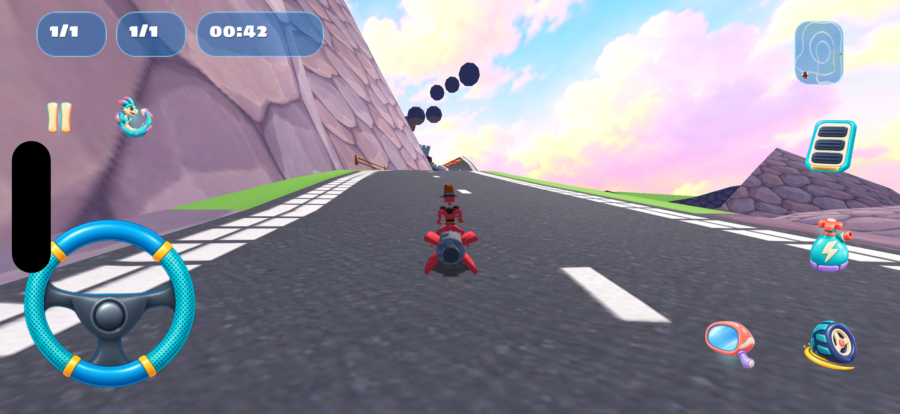
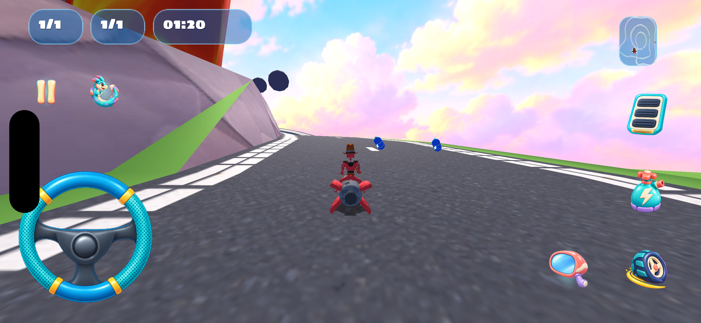
Промежуточные проверки этого этапа
V6 с поднятыми прозрачными карточками отклонена: дым слишком высоко и оторван от вулкана (кадр 1, кадр 2, статус). Первый объёмный V7 с 20 гранями на клуб заменён V7B: силуэт слишком угловатый (кадр 1, кадр 2, статус). Обе версии завершили один тестовый круг, что не означает визуального соответствия референсу.


Предыдущая доработка — V5 Alpha
У трёх основных дымовых эффектов восстановлена исходная геометрия с прозрачной текстурой: AshCloud, AshColumn и PyroclasticFlow. Пять остальных эффектов используют геометрию V4E. Все восемь получают сливовый оттенок через цвет вершин и прозрачность Alpha Blend; одна существующая RGBA-текстура повторно используется без новых копий.
Изменено размещение только трёх декоративных объектов с interaction=ghost: высота AshCloud увеличена на 43,61 единицы, масштаб 0,35 → 0,18; AshColumn поднят на 83,6 единицы без изменения масштаба; PyroclasticFlow поднят на 130 единиц, статический масштаб 0,35 → 0,12, значения и ручки кривой высоты сдвинуты на 130, значения и ручки трёх кривых масштаба умножены на 0,12. Это изменения размещений на карте, а не локальных размеров, начал координат или осей моделей. Все остальные узлы сцены совпадают с V4E.
Полотно трассы, его вершины, нормали, UV, цвета и индексы совпадают с оригиналом. Исходные track.xml, quads.xml, graph.xml, scripting.as и easter_eggs.xml сохранены побайтно. У трёх восстановленных эффектов локальная геометрия и UV совпадают с оригиналом; у остальных пяти — с V4E. Проверено, что три поднятых эффекта остаются выше максимальной высоты дороги с запасом, в том числе на всём цикле анимации PyroclasticFlow. Эта проверка касается именно трёх объектов и не заменяет проверку остальных эффектов.
| Показатель кандидата | Результат |
|---|---|
| Папка карты | 7,219,234 байт; на 474,301 байт меньше основной V1 |
| Треугольники | 59,209; +19.02% к оригиналу; число полигонов указано справочно |
| Дополнительные общие игровые ресурсы | 0 байт; используется существующая текстура |
| Регистрация в пуле | 8 редактируемых прототипов, 8 SPM, 2 определения материала; физические пути и зависимости проверены |
Общий вес карты уменьшился. Это не утверждение, что каждый отдельный меш вместе с текстурой укладывается в ±20% от оригинала: часть пяти ранее переделанных карточек имеет большее изменение веса, а исходные большие текстуры заменены общей меньшей. Число треугольников всех восьми дымовых моделей сохранено относительно соответствующих исходников.
В iOS Simulator проверен один круг Time Trial с одной машиной: естественный финиш #1 без принудительной победы. На двух приложенных игровых кадрах дорога открыта. Сохранённый Blender-файл повторно открыт: позиции, индексы, UV, цвета восьми прототипов и ключи с ручками кривых совпадают с экспортом. Проверены 85 частей общих размещений, текстуры и встроенные XML. В канонической библиотеке проверены привязки моделей карт 6–10 и свечение окон домов.
Карта 10 ещё не завершена. Несколько дымовых эффектов остаются похожи на вытянутые лепестки или столбы. Формы замка, скал, вулканов и лавовых шипов всё ещё отличаются от референса. Кандидат сохранён отдельно; основная игровая карта, итоговый Blender-файл и превью кампании сохраняют V1. Полный заезд кампании, обратное направление и производительность кандидата не подтверждены. Новый билд приложения на этом этапе не выполнялся.
Редактируемый кандидат V5 Alpha · Сохранность полотна и игровых данных · Изменённые размещения · Вес и треугольники · Граница проверки заезда · Blender и высота дыма · Проверка физических общих ресурсов
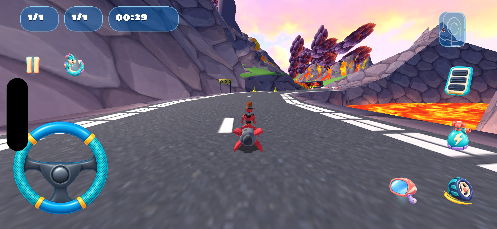
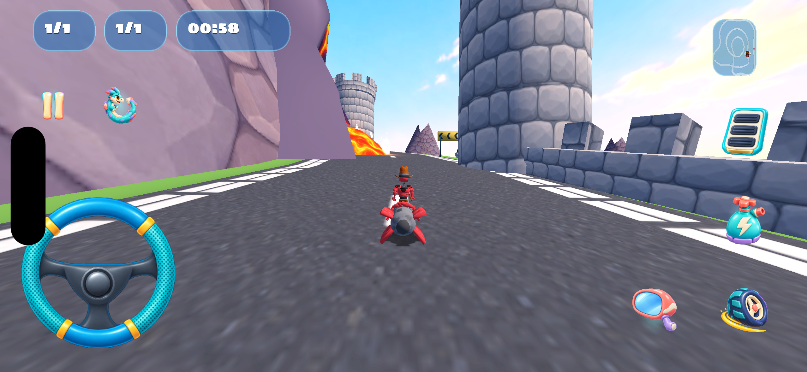
Отдельно сохранены естественный финиш и статический обзор камерой движка. Статический обзор не является скриншотом заезда. Задержки 40/80/150 секунд в именах файлов относятся к системным часам, не к игровому таймеру.


Отклонённый опыт V5 с непрозрачными объёмами
Объёмные клубы перекрывали дорогу во время анимации: первый игровой кадр, второй игровой кадр. Естественный финиш не подтверждает приемлемый визуал. Этот вариант отклонён и не перенесён в основную карту.


Доработка V2 — отдельный черновик
Входной декоративный зубчатый элемент заменён каменным арочным проездом: 294 → 300 треугольников, внешние границы, центр и начало координат сохранены. Масштаб кладки стен уменьшен втрое. Скалы получили новую лиловую каменную фактуру, отдельный материал мха и проекцию UV по поверхности; геометрия скал сохранена.
Вес папки черновика: 7,075,994 байт, ещё на 617,541 байт меньше предыдущей версии. Неиспользуемые старые карты рельефа и блеска сохранены вне игрового пакета. Общая геометрия: 59,261 треугольник, +19.12% к исходной карте. Новых общих игровых библиотек не добавлено.
Черновик прошёл один круг Time Trial с одной машиной и естественным финишем. Кадры ниже сняты с игровой камеры в iOS Simulator. Полный заезд кампании, обратное направление и производительность этим тестом не подтверждены.
Это отдельная временная карта для проверки. Основные игровые ресурсы, итоговый проект и превью кампании пока сохраняют предыдущую версию. До референса ещё остаются заметные отличия: размеры крупных замковых форм, яркие эффекты и лавовые шипы у входа, небо и дым. Этот черновик не является завершённой или согласованной десятой картой.
Редактируемый черновик V2 · Сохранность дороги · Бюджет черновика · Проверка заезда
Сохранены также верхний мост и естественный финиш. Новая текстура камня создана встроенным imagegen; точный запрос генерации сохранён вместе с доказательствами. Повторение 3×3 просмотрено отдельно.


Доработка V3 — небо и свечение у входа
Создано отдельное тёплое небо с голубым верхом, золотистым горизонтом и розовыми облаками. Панорама преобразована в шесть граней куба 512×512; четыре боковых стыка проверены по совпадению направлений и исходных пикселей до JPEG-сжатия. Это не подтверждает идеальный горизонтальный стык исходной генерации или все стыки куба.
Яркость цветов вершин двух декоративных свечений снижена до 12% и 8%. Их геометрия, размеры, центры, UV и коллизии сохранены; материалы остаются аддитивными и игнорируемыми физикой. Вся геометрия V3 совпадает с V2, все игровые XML и текстуры покрытия совпадают побайтно.
Вес черновика 7,122,130 байт, на 571,405 байт меньше основной версии V1. Новых общих игровых библиотек нет. 59,261 треугольник, +19.12% к исходной карте.
Один круг Time Trial с одной машиной завершился естественным финишем #1 в iOS Simulator. Первый кадр ниже снят с игровой камеры у старта без AI-движения; второй — из заезда с AI. Целевая задержка снимка по системным часам не равна точному показанию игрового таймера.
V3 сохраняется отдельно: основная карта, её итоговый Blender-проект и превью кампании пока используют V1. Карта ещё не завершена: дым остаётся угловатым и чрезмерно крупным, крупные замковые формы и лавовые шипы отличаются от референса. Полный заезд кампании, обратное направление и производительность этой проверкой не подтверждены.
Редактируемый черновик V3 · Сохранность геометрии · Вес и полигоны · Проверка заезда
Сохранены верхняя часть маршрута, естественный финиш и отдельный статический обзор в движке. Небо создано встроенным imagegen; точный запрос сохранён. Донорское небо других карт не изменено.


Предыдущая доработка V4E — пять дымовых эффектов
Пять декоративных дымовых моделей получили перекрывающиеся двусторонние плоскости с целым прозрачным изображением клубов. Исходные внешние границы, локальные центры, начала координат, направления, масштабы и число треугольников каждого из этих мешей сохранены. Их форма и UV изменены. Восемь старых анимаций смещения текстуры удалены только у ghost-эффектов; анимации движения, поворота и масштаба сохранены.
Прозрачный спрайт создан встроенным imagegen, затем технически уменьшен до RGBA 256×256. Вместо непрозрачных прямоугольников в игре видны клубы дыма. Освещаемый материал и большее перекрытие сделали их плотнее, чем в промежуточных опытах. Точный запрос генерации сохранён.
Папка кандидата: 7,224,932 байт, на 468,603 байт меньше основной V1. Новых общих игровых библиотек нет; 59,225 треугольников, +19.05% к исходной карте. Это бюджет всей карты, а не подтверждение диапазона веса каждого отдельного объекта.
Основная модель, дорожные поверхности и остальные SPM совпадают побайтно с V3. Игровые точки и линии сохранены. Число треугольников новых дымовых прототипов в редактируемом Blender совпадает с SPM, включая обратные стороны. Проверены 85 частей общих размещений, встроенные XML, файлы текстур и привязки общего каталога.
Один круг Time Trial с одной машиной в iOS Simulator завершился естественно, место #1; принудительная победа не использовалась. Кадры ниже сняты с игровой камеры. Названия файлов обозначают задержку по системным часам, а не точное значение игрового таймера.
Карта ещё не завершена. На верхнем маршруте остаются большие плоские дымовые объёмы; часть новых клубов вытянута из-за исходных тонких габаритов. Крупные формы замка и лавовые шипы пока далеки от референса. V4E сохранена отдельно: основная карта, её итоговый Blender-файл и превью кампании по-прежнему используют V1. Полный заезд кампании, обратное направление и производительность не подтверждены.
Редактируемый кандидат V4E · Сохранность · Вес и полигоны · Реальный пул и повторное использование · Проверка заезда
Дополнительно сохранены входная арка и естественный финиш. Опытные V4, V4B и V4C с прямоугольными артефактами не перенесены в игру. Новая текстура и пять новых SPM зарегистрированы физическими файлами; остальные текстуры и неизменённые модели повторно используют пути V3.


Референс
| Элемент | Результат |
|---|---|
| Крупные формы | Исходные замок, мосты, вулканы и лавовые поля сохранены. Текстуры камня и лавовых трещин взяты из пула. У входной арки лавовая окраска заменена отдельным каменным материалом. |
| Окружение | 40 зелёных крон на скалах, 12 деревянных ограждений, 5 красно-белых блоков. Все экземпляры ссылаются на общие игровые модели. |
| Навигация | 5 направляющих щитов только у поворотов, обращены к приближающимся машинам прямого направления. Исходные игровые ускорители и их разметка сохранены. |
| Атмосфера | Восемь дымовых моделей получили объёмные округлые клубы. Число треугольников приведено справочно; локальные границы и центры сохранены. Цвета заданы палитрой из SVG; исходные кривые движения сохранены. Пять больших декоративных дымовых эффектов без столкновений отображаются в масштабе 35% от исходного, чтобы не закрывать дорогу и небо. Их позиции, повороты и кривые движения не изменены. Исходные источники огня и света сохранены. |
Визуальное согласование итоговой версии не записано. Композиция исходного маршрута, зубчатый силуэт входной арки и геометрия скал отличаются от иллюстрации. Дым — лёгкие объёмные меши с сохранённой анимацией, без физической симуляции газов. Небо и освещение проще референса; точное совпадение не заявляется.
Кадры из движка


Вес
| Измерение | Результат |
|---|---|
| Исходная папка карты | 30,66 МБ |
| Текущая папка карты | 7,69 МБ |
| Новые общие игровые модели | 0 байт: все пять библиотек окружения уже включены в приложение другими картами |
| Карта со всеми новыми ресурсами | 7,69 МБ, уменьшение на 22,97 МБ |
| Треугольники при подробном LOD | 49,747 → 59,255; +19.11% |
| Распакованное приложение | 294,53 МБ, Debug iOS Simulator. Это не размер IPA или скачивания. |
Новая текстура лавы и асфальта прошла просмотр повторения 3×3. Крыша используется как целый лист в исходной UV-развёртке; её бесшовность не заявляется. Для дыма используется простая палитра; генерированный альфа-спрайт и атлас сохранены как отклонённый черновой источник. Уменьшение веса в этом этапе связано главным образом с разрешением текстур; 62 новых размещения добавляют координаты без копии геометрии на каждый экземпляр. Общая оптимизация и дополнительное наполнение карт 1–10 выполняются отдельным следующим этапом.
Проверки сохранности
Все позиции вершин, нормали и индексы моделей, кроме восьми декоративных дымовых мешей, совпадают. У дымовых мешей изменена форма; их локальные границы, центры и начало координат совпадают с исходными. UV декоративного камня переведены на двухцветную палитру; материал входной арки сменил имя. Дорожная геометрия, UV полотна, невидимые контрольные поверхности, ускорители и обратная рампа сохранены.
track.xml, quads.xml, graph.xml, scripting.as, easter_eggs.xml и музыка совпадают побайтово. Все старые позиции предметов, старты, контрольные линии, размещения библиотек и кривые анимации сохранены. Исходные физические свойства материалов совпадают; удалены старые визуальные карты рельефа/блеска у восьми материалов, три дымовых материала настроены для объёмных непрозрачных клубов. Единственная правка исходных масштабов относится к пяти декоративным дымовым объектам ghost.
У новых экземпляров не найдены вершины в дорожном коридоре до 3,5 м над исходными квадрами. При размещении дополнительно проверялись поверхности и периметры. Это проверка вершин и выборок, а не непрерывный расчёт столкновений.
Итоговый Blender-файл повторно открыт: недостающих текстур нет, 85 частей связанных экземпляров совпадают с экспортными матрицами. Исходные XML встроены в проект; реальные подвижные и статические меши сохранены. Общий каталог повторно открыт, привязки объектов и материалов карт 6–10 проверены. Ресурсы источника, сборки и установленного приложения сверены по SHA-256. Новое превью взято из движка и проверено в карте и кампании.
Проверка заезда
{
"twoLapsBeforeSmokeScale": {
"naturalFinishObserved": true,
"mode": "Time trial, one kart, two laps, no campaign event parameter",
"screenshot": "/Users/motoricallc/Downloads/stk-code-master/output/volcano-remake-rework/screenshots/final-320s.png",
"capture": "/Users/motoricallc/Downloads/stk-code-master/output/volcano-remake-rework/final-capture.json",
"versionBoundary": "Before five ghost smoke scales were reduced and smoke surfaces were replaced with rounded volumes; protected course/gameplay nodes/physical properties are identical"
},
"finalCurrentOneLap": {
"naturalFinishObserved": true,
"mode": "Time trial, one kart, one lap, no campaign event parameter",
"screenshot": "/Users/motoricallc/Downloads/stk-code-master/output/volcano-remake-rework/screenshots/final-current-150s.png",
"capture": "/Users/motoricallc/Downloads/stk-code-master/output/volcano-remake-rework/final-current-capture.json",
"versionBoundary": "Final rounded-volume smoke models and reduced ghost smoke scales; finish screenshot visually inspected"
},
"forceWinsUsed": false,
"reverseDirectionVerified": false,
"campaignSevenKartRunVerified": false,
"performanceMeasured": false
}Все сложности, отдельный заезд события кампании с семью картами и обратное направление не подтверждены; производительность не измерялась. В исходном заезде события кампании на 180-й секунде был круг 1/2 без финиша. Это не основание считать всю кампанию проверенной.